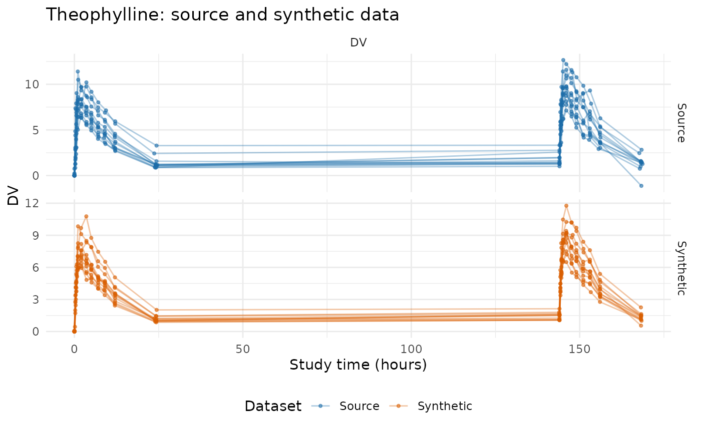
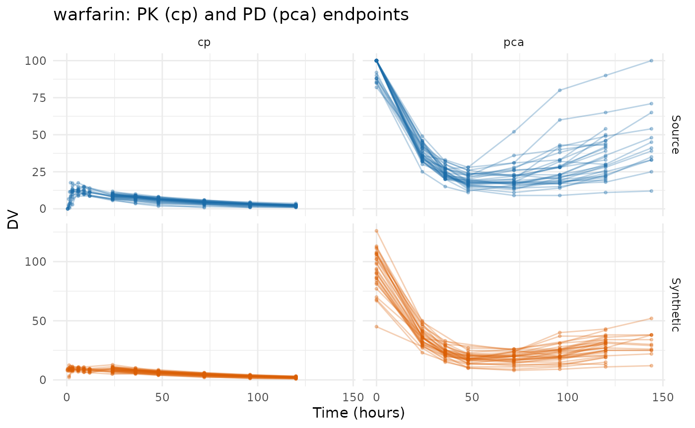
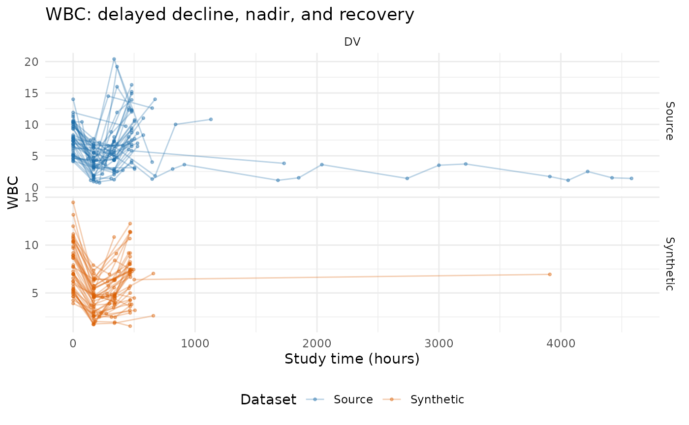
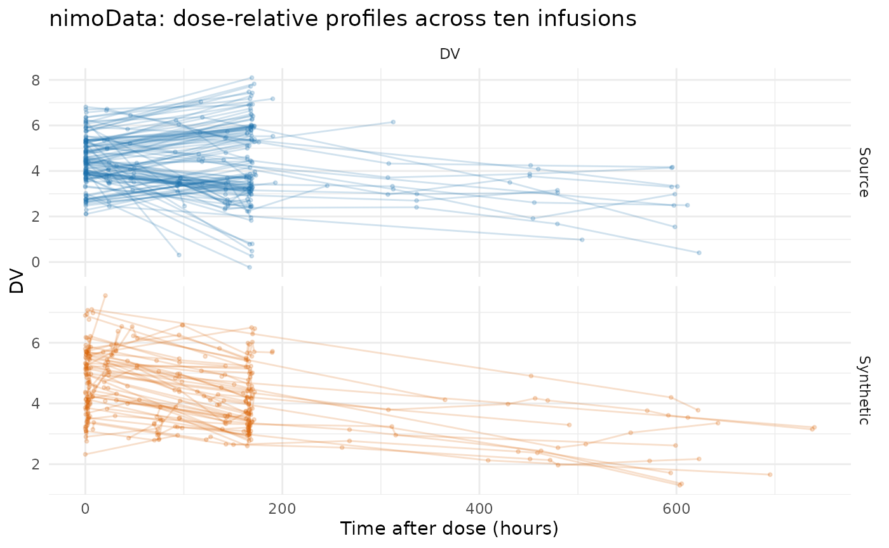
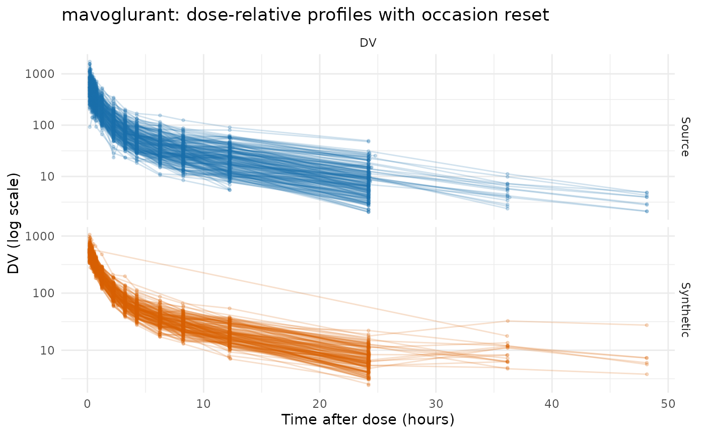
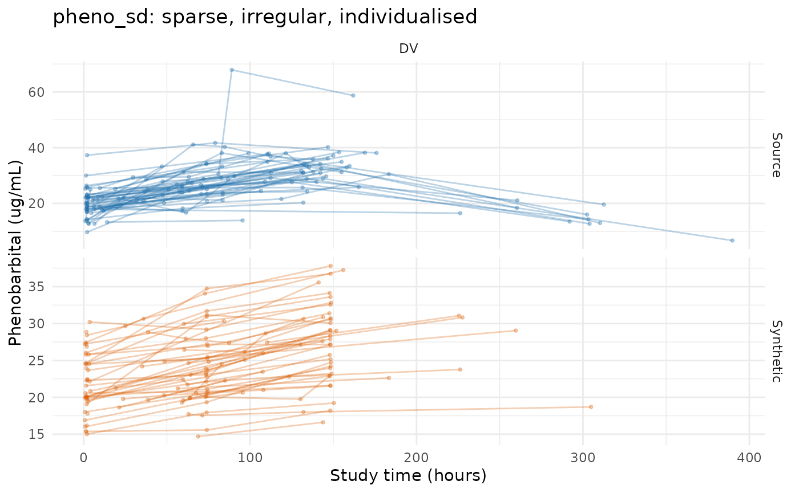
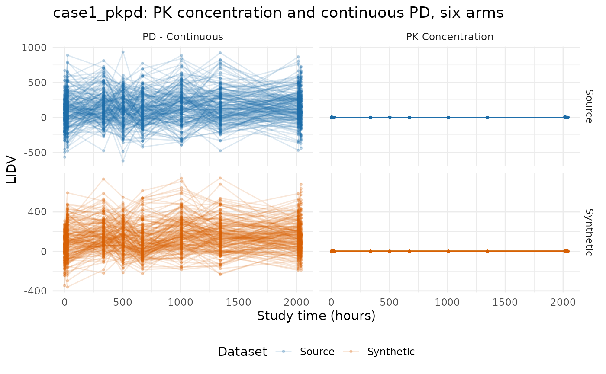
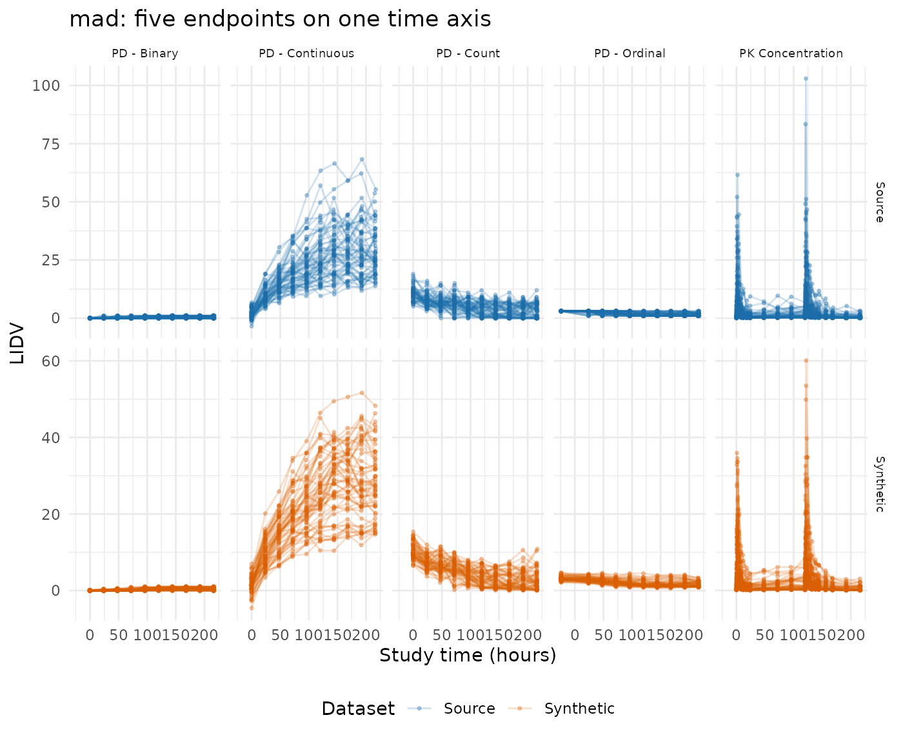
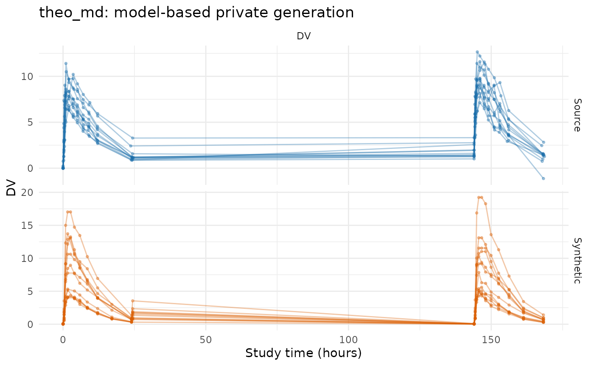

Evaluating AVATAR on public data
Andrew Stein
Source:vignettes/avatar-evaluation-public-data.Rmd
avatar-evaluation-public-data.RmdThis vignette compares eight source datasets against their synthetic
counterparts generated by synpmx_avatar().
Plotting helpers used throughout this vignette
observed_plot_data <- function(data, roles, dataset,
clock = "study_time") {
observed <- as.character(data[[roles$evid]]) %in% c("0", "0.0")
if (!is.null(roles$mdv)) {
observed <- observed & as.character(data[[roles$mdv]]) %in% c("0", "0.0")
}
observed <- observed & !is.na(data[[roles$dv]])
observation_rows <- which(observed)
occasion <- rep(1L, length(observation_rows))
tad <- rep(NA_real_, length(observation_rows))
if (!is.null(roles$occasion)) {
declared <- suppressWarnings(as.integer(
data[[roles$occasion]][observation_rows]
))
valid <- !is.na(declared) & declared >= 1L
occasion[valid] <- declared[valid]
}
if (!is.null(roles$tad)) {
declared <- suppressWarnings(as.numeric(data[[roles$tad]][observation_rows]))
valid <- is.finite(declared)
tad[valid] <- pmax(0, declared[valid])
}
subject_values <- data[[roles$id]]
for (id in unique(subject_values[observation_rows])) {
subject_rows <- which(!is.na(subject_values) & subject_values == id)
events <- !(as.character(data[[roles$evid]][subject_rows]) %in%
c("0", "0.0"))
if (!is.null(roles$amt)) {
events <- events & as.numeric(data[[roles$amt]][subject_rows]) > 0
}
positions <- which(subject_values[observation_rows] == id)
event_rows <- subject_rows[events]
if (length(event_rows) && !is.null(roles$occasion)) {
event_occasion <- suppressWarnings(as.integer(
data[[roles$occasion]][event_rows]
))
for (position in positions) {
candidates <- event_rows[event_occasion == occasion[position]]
if (length(candidates) && !is.finite(tad[position])) {
origin <- min(as.numeric(data[[roles$time]][candidates]))
tad[position] <-
as.numeric(data[[roles$time]][observation_rows[position]]) - origin
}
}
} else if (length(event_rows)) {
dose_times <- sort(unique(as.numeric(data[[roles$time]][event_rows])))
occasion[positions] <- pmax(1L, findInterval(
as.numeric(data[[roles$time]][observation_rows[positions]]),
dose_times
))
occasion[positions] <- pmin(occasion[positions], length(dose_times))
tad[positions] <-
as.numeric(data[[roles$time]][observation_rows[positions]]) -
dose_times[occasion[positions]]
}
}
plotted_time <- if (identical(clock, "tad")) tad else
as.numeric(data[[roles$time]][observation_rows])
data.frame(
dataset = factor(dataset, levels = c("Source", "Synthetic")),
subject = as.character(data[[roles$id]][observation_rows]),
time = plotted_time,
dv = as.numeric(data[[roles$dv]][observation_rows]),
occasion = occasion,
endpoint = if (is.null(roles$dvid)) "DV" else
as.character(data[[roles$dvid]][observation_rows]),
stringsAsFactors = FALSE
)
}
# Every dataset below gets the same figure: observation rows only, source above
# synthetic, one column per endpoint. `clock = "tad"` plots time after dose
# instead of study time, which is the readable view once a study doses more than
# once.
overlay_plot <- function(source, synthetic, roles, title,
clock = "study_time",
x_label = "Study time (hours)", y_label = "DV",
log_y = FALSE, alpha = 0.3) {
plotted <- rbind(
observed_plot_data(source, roles, "Source", clock),
observed_plot_data(synthetic, roles, "Synthetic", clock)
)
# One line per patient on a study-time axis, and one line per occasion on a
# dose-relative one, where the profiles are meant to lie on top of each other.
plotted$series <- if (identical(clock, "tad")) {
interaction(plotted$dataset, plotted$subject, plotted$occasion)
} else {
interaction(plotted$dataset, plotted$subject)
}
figure <- ggplot2::ggplot(
plotted,
ggplot2::aes(time, dv, group = series, colour = dataset)
) +
ggplot2::geom_line(alpha = alpha) +
ggplot2::geom_point(alpha = alpha, size = 0.7) +
ggplot2::facet_grid(dataset ~ endpoint, scales = "free_y") +
ggplot2::scale_colour_manual(values = comparison_colours) +
ggplot2::labs(x = x_label, y = y_label, colour = "Dataset", title = title) +
ggplot2::theme_minimal() +
ggplot2::theme(legend.position = "none")
if (isTRUE(log_y)) figure + ggplot2::scale_y_log10() else figure
}
# The full masking accounting for one run. `pmx_masking_report()` owns the row
# labels and the explanation next to each one, so this vignette and the study
# reports under `scripts_private/` cannot drift apart; only the caption is local.
masking_table <- function(source, roles, synthetic, label) {
knitr::kable(
as.data.frame(pmx_masking_report(synthetic, source, roles)),
row.names = FALSE, align = c("l", "r", "l"),
caption = paste0("Everything ", label,
"'s run removed, and what was left to build on.")
)
}The datasets
Every dataset here is public package data from
nlmixr2data or xgxr, both
Suggests of this package.
| Dataset | Package | Patients | Rows | Endpoints | What it is here to exercise |
|---|---|---|---|---|---|
theo_md |
nlmixr2data | 12 | 348 | 1 | Seven Q24H oral doses with dense profiles on occasions 1 and 7 only. Dosed by weight. |
warfarin |
nlmixr2data | 32 | 515 | 2 | One dose, PK and PD running on different time courses, categorical covariates |
wbcSim |
nlmixr2data | 45 | 280 | 1 | Infusion start/stop pairs and a delayed WBC response. Follow-up time varies. |
nimoData |
nlmixr2data | 12 | 441 | 1 | Ten roughly weekly infusions. |
mavoglurant |
nlmixr2data | 120 | 2678 | 1 | One- and two-period crossover, TIME resetting within
OCC, an occasion-varying assigned dose, infusion rows. |
pheno_sd |
nlmixr2data | 59 | 744 | 1 | Neonatal phenobarbital, individualised dosing, sparse irregular sampling, time-varying weight. |
case1_pkpd |
xgxr | 180 | 20820 | 2 | A PK and PD measure with nominal time coarsening. |
mad |
xgxr | 60 | 4160 | 5 | Multiple ascending dose carrying ordinal, count and binary PD alongside continuous PD and PK. |
None of these datasets uses steady state, ADDL,
or II. Every dose is written out as its own row,
so the handling of compressed dose records is exercised by the package’s
tests rather than by anything below.
Shared workflow
Every example follows the same five steps:
- declare column meanings with
pmx_roles(); - synthesize with
synpmx_avatar(); - plot the real and synthetic data;
- summarize observations (DV) and covariate statistics
- report the score card for the synthetic dataset.
The scorecard marks each check pass, FAIL,
or review. A review row is one where no
threshold would be honest, so it has to be read rather than skimmed.
vignette("scorecard-synthetic-data-checks") states what
each check asks and what passing it means.
Two of the eight datasets fail, both on the same check, and both
sections say why. The runs below are quiet: synpmx_avatar()
prints an alert for every exposure it could not remove, and eighteen of
those blocks would say what the scorecard and
pmx_masking_report() say here in tables.
theo_md: seven oral doses, dosed by weight
Twelve subjects on one oral regimen, seven doses 24 hours apart, with dense concentration sampling around the first and last dose only.
data("theo_md", package = "nlmixr2data")
theo_roles <- pmx_roles(
id = "ID", time = "TIME", dv = "DV", amt = "AMT",
evid = "EVID", cmt = "CMT", covariates = "WT"
)
theo_synth <- suppressWarnings(synpmx_avatar(theo_md, theo_roles, seed = 303))
compare_pmx_distributions(theo_md, theo_synth, theo_roles)| variable | dataset | n | n_subjects | mean | sd | min | q25 | median | q75 | max |
|---|---|---|---|---|---|---|---|---|---|---|
| DV | source | 264 | 12 | 5.53 | 3 | -1.13 | 3.3 | 5.74 | 7.8 | 12.7 |
| DV | synthetic | 264 | 12 | 5.03 | 2.63 | 0 | 3.38 | 5.23 | 6.75 | 11.8 |
| variable | dataset | n | mean | sd | min | q25 | median | q75 | max |
|---|---|---|---|---|---|---|---|---|---|
| WT | source | 12 | 69.6 | 9.5 | 54.6 | 63.6 | 70.5 | 74.4 | 86.4 |
| WT | synthetic | 12 | 68.5 | 5.18 | 58.2 | 65.5 | 69.7 | 71.7 | 77.1 |
synpmx_scorecard(theo_md, theo_synth, theo_roles)| check | question | reads | result | verdict | explore |
|---|---|---|---|---|---|
| A1 | Synthetic table is a legal PMX dataset | synthetic | TRUE | pass | validate_pmx(synthetic, roles) |
| A2 | Source is legal under the declared roles | source | TRUE | pass | validate_pmx(source, roles, strict = FALSE) |
| A3 | Every endpoint survived | both | 1 of 1 | pass | compare_pmx_distributions(source, synthetic, roles) |
| A4 | Cohort size survived | both | 12 -> 12 | pass | pmx_masking_report(synthetic, source, roles) |
| A5 | Observations per patient | both | 22 -> 22 | review | compare_pmx_distributions(source, synthetic, roles) |
| A5 | Doses per patient | both | 7 -> 7 | review | pmx_masking_report(synthetic, source, roles) |
| B1a | Avatars wearing one real patient’s visit set | run settings | 0 | pass | plot_pmx_schedule(source, roles) |
| B1b | Avatars wearing one real patient’s dose schedule | run settings | 0 | pass | skeleton_uniqueness(source, roles, coarsen_time = TRUE) |
| B2 | Synthetic patients unusual within their stratum | synthetic | 3 of 12 | review | flag_identifiable_subjects(synthetic, roles) |
| B3 | Adversarial accuracy inside its null interval | both | 0.500 in [0.167, 0.815] | review | compare_pmx_proximity(source, synthetic, roles) |
| B4a | Generated time vectors copying an exposed real one | both | 0 | pass | skeleton_uniqueness(source, roles, coarsen_time = TRUE) |
| B4b | Generated DV vectors copying an exposed real one | both | 0 | pass | compare_pmx_proximity(source, synthetic, roles) |
| C4 | Distinct dose-time schedules represented | both | 1 of 1 | pass | pmx_masking_report(synthetic, source, roles) |
Nothing fails. Twelve subjects on one dense protocol leave an obvious
visit grid to find, so coarsening takes the twelve unique observation
schedules to zero without a declared nominal_time, and the
three visit sets that remain are each held by several subjects.
Dose amounts are copied from the anchor
Theophylline is dosed by weight, and the run declined to say so:
attr(theo_synth, "pmx_settings")$dose_basis_note
#> [1] "the 11 distinct dose amounts are not a fixed multiple of any declared covariate: WT (8 ratio levels for 11 distinct amounts -- too many to be a protocol)"The recorded milligrams per kilogram run from 3.10 to 5.86, which is
8 distinct ratio levels for 11 distinct amounts, so detection fails
closed rather than impose a multiplier the study did not use. The cost
is that each avatar’s amt is its anchor’s, and that amount
still encodes one real patient’s weight. Naming the covariate skips the
inference and holds each dose row’s own ratio:
theo_roles_dosed <- pmx_roles(
id = "ID", time = "TIME", dv = "DV", amt = "AMT", evid = "EVID",
cmt = "CMT", covariates = "WT", dose_covariate = "WT"
)
theo_declared <- suppressWarnings(
synpmx_avatar(theo_md, theo_roles_dosed, seed = 303)
)
per_kg <- function(x) {
dosed <- x[x$EVID != 0, ]
range(dosed$AMT / dosed$WT)
}
data.frame(
dataset = c("source", "synthetic, inferred", "synthetic, declared"),
rbind(per_kg(theo_md), per_kg(theo_synth), per_kg(theo_declared))
) |> setNames(c("dataset", "min mg/kg", "max mg/kg")) |>
knitr::kable(digits = 2, caption = paste(
"Dose per kilogram. Declared, each avatar carries its anchor's own ratio,",
"so the synthetic cohort spans the source's range; inferred, the amount is",
"the anchor's milligrams over the avatar's blended weight."))| dataset | min mg/kg | max mg/kg |
|---|---|---|
| source | 3.10 | 5.86 |
| synthetic, inferred | 3.65 | 5.50 |
| synthetic, declared | 3.10 | 5.86 |
warfarin: two endpoints on different time courses
32 subjects, a single dose, a pharmacokinetic endpoint
(cp) and a pharmacodynamic one (pca) that run
on different time courses, and a lower-case schema with one categorical
covariate.
data("warfarin", package = "nlmixr2data")
warfarin_roles <- pmx_roles(
id = "id", time = "time", dv = "dv", amt = "amt", evid = "evid",
dvid = "dvid", covariates = c("wt", "age", "sex")
)
warfarin_synth <- suppressWarnings(
synpmx_avatar(warfarin, warfarin_roles, seed = 404)
)
compare_pmx_distributions(warfarin, warfarin_synth, warfarin_roles)| variable | dataset | n | n_subjects | mean | sd | min | q25 | median | q75 | max |
|---|---|---|---|---|---|---|---|---|---|---|
| cp | source | 251 | 32 | 6.41 | 3.82 | 0 | 3.2 | 6.1 | 8.9 | 17.6 |
| cp | synthetic | 258 | 32 | 6.34 | 2.87 | 0.769 | 3.71 | 6.78 | 8.59 | 12.9 |
| pca | source | 232 | 32 | 37.5 | 26.1 | 9 | 20 | 28 | 42 | 100 |
| pca | synthetic | 224 | 32 | 34.1 | 25.5 | 8 | 20 | 25 | 36 | 126 |
| variable | dataset | n | mean | sd | min | q25 | median | q75 | max |
|---|---|---|---|---|---|---|---|---|---|
| wt | source | 32 | 70 | 12.7 | 40 | 61.5 | 71.6 | 78.5 | 102 |
| wt | synthetic | 32 | 71.6 | 7.57 | 53.7 | 67.9 | 72.9 | 76.3 | 86.5 |
| age | source | 32 | 31 | 10.5 | 21 | 22 | 27.5 | 36 | 63 |
| age | synthetic | 32 | 26.2 | 4.5 | 21 | 23 | 24.5 | 28.2 | 39 |
| variable | dataset | level | n | proportion |
|---|---|---|---|---|
| sex | source | female | 5 | 0.156 |
| sex | source | male | 27 | 0.844 |
| sex | synthetic | female | 3 | 0.0938 |
| sex | synthetic | male | 29 | 0.906 |
synpmx_scorecard(warfarin, warfarin_synth, warfarin_roles)| check | question | reads | result | verdict | explore |
|---|---|---|---|---|---|
| A1 | Synthetic table is a legal PMX dataset | synthetic | TRUE | pass | validate_pmx(synthetic, roles) |
| A2 | Source is legal under the declared roles | source | TRUE | pass | validate_pmx(source, roles, strict = FALSE) |
| A3 | Every endpoint survived | both | 2 of 2 | pass | compare_pmx_distributions(source, synthetic, roles) |
| A4 | Cohort size survived | both | 32 -> 32 | pass | pmx_masking_report(synthetic, source, roles) |
| A5 | Observations per patient | both | 15.1 -> 15.1 | review | compare_pmx_distributions(source, synthetic, roles) |
| A5 | Doses per patient | both | 1 -> 1 | review | pmx_masking_report(synthetic, source, roles) |
| B1a | Avatars wearing one real patient’s visit set | run settings | 0 | pass | plot_pmx_schedule(source, roles) |
| B1b | Avatars wearing one real patient’s dose schedule | run settings | 0 | pass | skeleton_uniqueness(source, roles, coarsen_time = TRUE) |
| B2 | Synthetic patients unusual within their stratum | synthetic | 0 of 32 | review | flag_identifiable_subjects(synthetic, roles) |
| B3 | Adversarial accuracy inside its null interval | both | 0.531 in [0.312, 0.719] | review | compare_pmx_proximity(source, synthetic, roles) |
| B4a | Generated time vectors copying an exposed real one | both | 0 | pass | skeleton_uniqueness(source, roles, coarsen_time = TRUE) |
| B4b | Generated DV vectors copying an exposed real one | both | 0 | pass | compare_pmx_proximity(source, synthetic, roles) |
| A6 | Discrete endpoints keeping their source scale | both | 1 of 1 | pass | pmx_endpoint_types(source, roles) |
| B5a | Patients holding the least-held categorical level | synthetic | sex = female: 3 | pass | table(synthetic$sex) |
| B5b | Rare source levels copied into the output | both | 0 of 0 exposed | pass | compare_pmx_rare_levels(source, synthetic, roles) |
| C4 | Distinct dose-time schedules represented | both | 1 of 1 | pass | pmx_masking_report(synthetic, source, roles) |
Nothing fails. Dose was recomputed from weight here: warfarin is
dosed at 1.5 mg/kg to within 0.1%, tight enough for detection to fire,
so each avatar’s amt comes from its own blended weight
rather than from its anchor’s.
Twelve source patients are unique and B1a still passes
B1a reads the synthetic data. The masking report reads the source, and it disagrees:
masking_table(warfarin, warfarin_roles, warfarin_synth, "warfarin")| Quantity | Value | What it means |
|---|---|---|
| Who was available to build on | ||
| Patients in the source | 32 | |
| excluded as structurally extreme | 0 (0%) |
screen: follow-up or dose count over twice
the cohort’s 90th percentile |
| excluded, route arm too small | 0 (0%) |
on_donor_shortfall: a route arm holding
fewer than k + 1 patients |
| left to anchor avatars on | 32 (100%) | an excluded patient still contributes as a donor |
| Avatars built | 32 | cohort size is unaffected by the exclusions above |
| Donor pools: who may be blended with whom | ||
| Administration routes | 1 | oral, infusion, and so on. Donors are NEVER blended across a route, so each is a separate pool |
| Dose/schedule groups | 20 | patients with an identical dose pattern and endpoint set. Donors are looked for here first; many small groups means the search falls back to the wider route pool |
| How much of one real patient reaches one avatar | ||
| Donor floor, k | 5 | real patients blended into each avatar |
| Largest share one donor may hold | 0.5 | max_donor_weight |
| that cap actually bound on | 21 of 32 (66%) | of avatars. Near 100% means the cap, not distance, is setting the weights |
| Effective donors per avatar, mean | 2.87 | 1 / sum(w^2). This, not k, is how many patients an avatar is really made of |
| Visit schedule: WHEN patients were observed | ||
| Visit grid used | derived | no usable nominal_time, so a grid was
inferred from the recorded times themselves. Declaring
nominal_time is better |
| Unique observation schedules, before coarsening | 14 (44%) | patients whose list of observation times nobody else shares |
| Unique observation schedules, after coarsening | 12 (38%) | the count that matters: an avatar copies its anchor’s times verbatim |
| because of a one-off observation time | 0 (0%) | sampled when nobody else was. Declaring
nominal_time is the fix |
| because of which visits they attended | 12 (38%) | every time is shared. The visits themselves are missing – a missed visit, a discontinuation, or follow-up that has not reached them – and no grid can fix that |
| Visit sets: WHICH of those visits each patient attended | ||
| Distinct visit sets in the source | 14 | a visit set is which of the shared grid visits one patient actually had |
| held by fewer than 2 patients, so not reused | 4 (29%) |
min_pattern_share is that threshold. These
visit sets are lost, not approximated |
| real patients holding those | 4 (12%) | those patients are NOT removed – they still anchor avatars and still act as donors. Only their particular pattern of absences stops being copied |
| Avatars given a visit set from the pool | 32 of 32 (100%) | drawn from the sets that cleared the threshold, or built from their shape – never from their own anchor alone |
| of those, misses placed fresh | 7 of 32 (22%) | the kind of missingness was reused; exactly which visits were missed was invented |
| of those, miss count moved | 0 of 32 (0%) | no arrangement at the wanted number of missing visits was free, so the count moved by a visit or two. Misses at the END of a record are the case that forces it, because for a given count there is exactly one such arrangement |
| of those, a rare set swapped for a shared one | 0 of 32 (0%) | the anchor’s own set was held by nobody else and no arrangement was free, so the group’s most widely held set was used instead – less faithful to that avatar, and it discloses nothing |
| of those, moved to a different anchor | 0 of 32 (0%) | the first anchor’s own set was shared by nobody and nothing legal could be placed, so this avatar was anchored elsewhere. Every source patient stays a donor and stays available to anchor others |
| Avatars keeping their anchor’s own visit set | 0 of 32 (0%) | not a problem in itself: if several real patients share that set, copying it identifies nobody. Only the next row is a disclosure |
| Avatars carrying a visit set nobody else shares | 0 (0%) | this is the row that must be 0%. That pattern of which visits have observations belongs to one real patient. It is non-zero only when the schedule group has no shared set to substitute; the run alerts when it happens |
| of those, dosing re-truncated | 0 of 32 (0%) | the anchor stopped dosing at a depth nobody else used, so the avatar stops at a different one – shared, or used by nobody. Truncating a schedule to a real dose time is protocol-valid in a way that moving dose times is not |
| Distinct dose schedules in the source | 1 | |
| represented in the synthetic cohort | 1 (100%) | a regimen only one patient received cannot be given to an avatar without pointing at them, so it is not represented at all. This is the cost of the guarantee below, and on a small cohort it is unavoidable rather than a setting to tune |
| Avatars carrying a dose schedule nobody else shares | 0 (0%) | must also be 0%. Dose events are copied from the anchor verbatim, so patients whose dose times nobody shares are not built upon. Non-zero only when EVERY patient is in that position, which individualised dosing can cause |
| Dose | ||
| Amounts recomputed from a covariate |
yes, from wt
(inferred) |
the 20 distinct dose amounts are a fixed multiple of
wt, at 1 protocol level(s) |
| protocol levels found | 1.5 | dose per unit of wt; every amount was
snapped to the nearest of these |
Twelve of the 32 subjects still hold an observation schedule nobody else shares after coarsening, and not one of them because of when they were sampled: every one of their observation times is shared with somebody, and what singles them out is which of those visits they attended. Warfarin has subjects with 13, 14, 16, 17, 18, 19 and 25 observations, and the rarer counts pick those subjects out on their own. No grid resolution helps, because the times are already shared.
Four of the fourteen visit sets are held by one patient each and are discarded, and 22% of avatars had their missed visits placed fresh instead. Those four patients stay in the cohort and keep contributing measurements as donors; only their particular pattern of absences stops being reproduced. That is why B1a is 0 while twelve real patients are unique.
Categorical covariates are not held to their source share
The distribution table above shows 5 female subjects of 32 in the
source and 3 in the synthetic cohort. Anchors are sampled with
replacement, so a level held by 5 of 32 patients lands on however many
avatars the draw gives it: across six seeds this run produced between 1
and 8. Only columns declared as strata are held to their
source share, which is what preserve_strata_balance does
for case1_pkpd’s treatment arms below.
The same table shows the standard deviation of age falling from 10.5
years to 4.5. Blending k real subjects narrows every
continuous covariate, and that is the algorithm working as designed
rather than a defect. No scorecard row covers either effect, so read
this table on every run.
wbcSim: infusions, and patients too extreme to build on
45 subjects with infusion start/stop pairs and a delayed white-blood-cell decline, nadir and recovery. Follow-up time varies, and a few subjects are followed far longer than the rest.
data("wbcSim", package = "nlmixr2data")
wbc_roles <- pmx_roles(
id = "ID", time = "TIME", dv = "DV", amt = "AMT", evid = "EVID", cmt = "CMT"
)
wbc_synth <- suppressWarnings(synpmx_avatar(wbcSim, wbc_roles, seed = 505))
compare_pmx_distributions(wbcSim, wbc_synth, wbc_roles)| variable | dataset | n | n_subjects | mean | sd | min | q25 | median | q75 | max |
|---|---|---|---|---|---|---|---|---|---|---|
| DV | source | 176 | 45 | 6.43 | 3.83 | 0.7 | 3.68 | 5.8 | 8.38 | 20.4 |
| DV | synthetic | 164 | 45 | 6.03 | 2.65 | 1.54 | 4.23 | 5.54 | 7.42 | 14.5 |
synpmx_scorecard(wbcSim, wbc_synth, wbc_roles)| check | question | reads | result | verdict | explore |
|---|---|---|---|---|---|
| A1 | Synthetic table is a legal PMX dataset | synthetic | TRUE | pass | validate_pmx(synthetic, roles) |
| A2 | Source is legal under the declared roles | source | TRUE | pass | validate_pmx(source, roles, strict = FALSE) |
| A3 | Every endpoint survived | both | 1 of 1 | pass | compare_pmx_distributions(source, synthetic, roles) |
| A4 | Cohort size survived | both | 45 -> 45 | pass | pmx_masking_report(synthetic, source, roles) |
| A5 | Observations per patient | both | 3.9 -> 3.6 | review | compare_pmx_distributions(source, synthetic, roles) |
| A5 | Doses per patient | both | 1.2 -> 1 | review | pmx_masking_report(synthetic, source, roles) |
| B1a | Avatars wearing one real patient’s visit set | run settings | 0 | pass | plot_pmx_schedule(source, roles) |
| B1b | Avatars wearing one real patient’s dose schedule | run settings | 0 | pass | skeleton_uniqueness(source, roles, coarsen_time = TRUE) |
| B2 | Synthetic patients unusual within their stratum | synthetic | 12 of 45 | review | flag_identifiable_subjects(synthetic, roles) |
| B3 | Adversarial accuracy inside its null interval | both | 0.568 in [0.306, 0.689] | review | compare_pmx_proximity(source, synthetic, roles) |
| B4a | Generated time vectors copying an exposed real one | both | 0 | pass | skeleton_uniqueness(source, roles, coarsen_time = TRUE) |
| B4b | Generated DV vectors copying an exposed real one | both | 0 | pass | compare_pmx_proximity(source, synthetic, roles) |
| C4 | Distinct dose-time schedules represented | both | 1 of 4 | review | pmx_masking_report(synthetic, source, roles) |
Nothing fails, and C4 is the row to read: 1 of the 4 source dose regimens is represented in the output.
Three re-dosed patients are not in the synthetic cohort
masking_table(wbcSim, wbc_roles, wbc_synth, "wbcSim")| Quantity | Value | What it means |
|---|---|---|
| Who was available to build on | ||
| Patients in the source | 45 | |
| excluded as structurally extreme | 2 (4%) |
screen: follow-up or dose count over twice
the cohort’s 90th percentile |
| excluded, route arm too small | 0 (0%) |
on_donor_shortfall: a route arm holding
fewer than k + 1 patients |
| left to anchor avatars on | 43 (96%) | an excluded patient still contributes as a donor |
| Avatars built | 45 | cohort size is unaffected by the exclusions above |
| Donor pools: who may be blended with whom | ||
| Administration routes | 1 | oral, infusion, and so on. Donors are NEVER blended across a route, so each is a separate pool |
| Dose/schedule groups | 28 | patients with an identical dose pattern and endpoint set. Donors are looked for here first; many small groups means the search falls back to the wider route pool |
| How much of one real patient reaches one avatar | ||
| Donor floor, k | 5 | real patients blended into each avatar |
| Largest share one donor may hold | 0.5 | max_donor_weight |
| that cap actually bound on | 28 of 45 (62%) | of avatars. Near 100% means the cap, not distance, is setting the weights |
| Effective donors per avatar, mean | 3.05 | 1 / sum(w^2). This, not k, is how many patients an avatar is really made of |
| Visit schedule: WHEN patients were observed | ||
| Visit grid used | derived | no usable nominal_time, so a grid was
inferred from the recorded times themselves. Declaring
nominal_time is better |
| Unique observation schedules, before coarsening | 30 (67%) | patients whose list of observation times nobody else shares |
| Unique observation schedules, after coarsening | 17 (38%) | the count that matters: an avatar copies its anchor’s times verbatim |
| because of a one-off observation time | 2 (4%) | sampled when nobody else was. Declaring
nominal_time is the fix |
| because of which visits they attended | 15 (33%) | every time is shared. The visits themselves are missing – a missed visit, a discontinuation, or follow-up that has not reached them – and no grid can fix that |
| Visit sets: WHICH of those visits each patient attended | ||
| Distinct visit sets in the source | 25 | a visit set is which of the shared grid visits one patient actually had |
| held by fewer than 2 patients, so not reused | 5 (20%) |
min_pattern_share is that threshold. These
visit sets are lost, not approximated |
| real patients holding those | 5 (11%) | those patients are NOT removed – they still anchor avatars and still act as donors. Only their particular pattern of absences stops being copied |
| Avatars given a visit set from the pool | 45 of 45 (100%) | drawn from the sets that cleared the threshold, or built from their shape – never from their own anchor alone |
| of those, misses placed fresh | 1 of 45 (2%) | the kind of missingness was reused; exactly which visits were missed was invented |
| of those, miss count moved | 0 of 45 (0%) | no arrangement at the wanted number of missing visits was free, so the count moved by a visit or two. Misses at the END of a record are the case that forces it, because for a given count there is exactly one such arrangement |
| of those, a rare set swapped for a shared one | 0 of 45 (0%) | the anchor’s own set was held by nobody else and no arrangement was free, so the group’s most widely held set was used instead – less faithful to that avatar, and it discloses nothing |
| of those, moved to a different anchor | 1 of 45 (2%) | the first anchor’s own set was shared by nobody and nothing legal could be placed, so this avatar was anchored elsewhere. Every source patient stays a donor and stays available to anchor others |
| Avatars keeping their anchor’s own visit set | 0 of 45 (0%) | not a problem in itself: if several real patients share that set, copying it identifies nobody. Only the next row is a disclosure |
| Avatars carrying a visit set nobody else shares | 0 (0%) | this is the row that must be 0%. That pattern of which visits have observations belongs to one real patient. It is non-zero only when the schedule group has no shared set to substitute; the run alerts when it happens |
| of those, dosing re-truncated | 0 of 45 (0%) | the anchor stopped dosing at a depth nobody else used, so the avatar stops at a different one – shared, or used by nobody. Truncating a schedule to a real dose time is protocol-valid in a way that moving dose times is not |
| Distinct dose schedules in the source | 4 | |
| represented in the synthetic cohort | 1 (25%) | a regimen only one patient received cannot be given to an avatar without pointing at them, so it is not represented at all. This is the cost of the guarantee below, and on a small cohort it is unavoidable rather than a setting to tune |
| Avatars carrying a dose schedule nobody else shares | 0 (0%) | must also be 0%. Dose events are copied from the anchor verbatim, so patients whose dose times nobody shares are not built upon. Non-zero only when EVERY patient is in that position, which individualised dosing can cause |
| Dose | ||
| Amounts recomputed from a covariate | no | no covariates are declared, so there is
nothing to test the amounts against |
so amt is copied verbatim |
from the anchor | each avatar’s implied dose per kg is therefore its
anchor’s, not its own, and the amount still encodes one real patient’s
covariate. Declare dose_covariate if this study is weight-
or BSA-based |
Forty-two of the 45 subjects have a single infusion at time 0. The
other three were re-dosed on a schedule nobody else shares, so no avatar
can be built on them without pointing at them, and every synthetic
subject carries the one shared regimen. Doses per patient falls from 1.2
to 1.0 in the A5 row. The three patients are not removed and still act
as donors, but that part of the study design is not in the output, and
C4 is review rather than pass for exactly this
reason.
Two of those three are also the only patients in this vignette that
the anchor screen removes: they are followed far enough past the rest to
exceed twice the cohort’s 90th percentile, so
synpmx_avatar() builds no avatar on them
(screen = TRUE, the default). Read the first block of the
table above as a pair: 43 anchors available, 45 avatars
built. Screening removes a subject from the pool avatars are
drawn from, not from the cohort. The remaining 43 are sampled with
replacement to fill the same 45 slots, and the screened subjects still
contribute measurements as donors. What is lost is the possibility of an
avatar wearing their distinctive follow-up length.
screen = FALSE keeps every subject in the pool.
Dose amounts are not recomputed: wbcSim declares no
covariates, so there is nothing to test the amounts against.
nimoData: ten infusions recorded at actual times
Twelve subjects, ten roughly weekly infusions each, with declared
occasion (OCC) and time after dose (TAD). The
nominal dose group DOS is carried through with
keep, which copies it from the same subject that supplied
the doses so that it stays coherent with them. The redundant
WGT column is left undeclared and is dropped.
data("nimoData", package = "nlmixr2data")
nimo_roles <- pmx_roles(
id = "ID", time = "TIME", dv = "DV", amt = "AMT", evid = "EVID",
rate = "RATE", mdv = "MDV", tad = "TAD", occasion = "OCC",
covariates = c("BSA", "AGE", "HGT"), keep = "DOS"
)
nimo_synth <- suppressWarnings(synpmx_avatar(nimoData, nimo_roles, seed = 606))
compare_pmx_distributions(nimoData, nimo_synth, nimo_roles)| variable | dataset | n | n_subjects | mean | sd | min | q25 | median | q75 | max |
|---|---|---|---|---|---|---|---|---|---|---|
| DV | source | 321 | 12 | 4.22 | 1.45 | -0.232 | 3.28 | 4.02 | 5.3 | 8.1 |
| DV | synthetic | 330 | 12 | 4.27 | 1.17 | 1.31 | 3.35 | 4.12 | 5.18 | 7.55 |
| variable | dataset | n | mean | sd | min | q25 | median | q75 | max |
|---|---|---|---|---|---|---|---|---|---|
| BSA | source | 12 | 1.64 | 0.0969 | 1.5 | 1.58 | 1.62 | 1.71 | 1.8 |
| BSA | synthetic | 12 | 1.63 | 0.0597 | 1.58 | 1.58 | 1.59 | 1.66 | 1.74 |
| AGE | source | 12 | 49.7 | 10.2 | 34 | 42 | 45.5 | 59 | 64 |
| AGE | synthetic | 12 | 50.8 | 5.32 | 43 | 48.8 | 50.5 | 52 | 62 |
| HGT | source | 12 | 155 | 5.4 | 145 | 152 | 156 | 160 | 162 |
| HGT | synthetic | 12 | 156 | 3.06 | 151 | 153 | 156 | 158 | 160 |
synpmx_scorecard(nimoData, nimo_synth, nimo_roles)| check | question | reads | result | verdict | explore |
|---|---|---|---|---|---|
| A1 | Synthetic table is a legal PMX dataset | synthetic | TRUE | pass | validate_pmx(synthetic, roles) |
| A2 | Source is legal under the declared roles | source | TRUE | pass | validate_pmx(source, roles, strict = FALSE) |
| A3 | Every endpoint survived | both | 1 of 1 | pass | compare_pmx_distributions(source, synthetic, roles) |
| A4 | Cohort size survived | both | 12 -> 12 | pass | pmx_masking_report(synthetic, source, roles) |
| A5 | Observations per patient | both | 26.8 -> 27.5 | review | compare_pmx_distributions(source, synthetic, roles) |
| A5 | Doses per patient | both | 10 -> 10 | review | pmx_masking_report(synthetic, source, roles) |
| B1a | Avatars wearing one real patient’s visit set | run settings | 0 | pass | plot_pmx_schedule(source, roles) |
| B1b | Avatars wearing one real patient’s dose schedule | run settings | 12 | FAIL | skeleton_uniqueness(source, roles, coarsen_time = TRUE) |
| B2 | Synthetic patients unusual within their stratum | synthetic | 4 of 12 | review | flag_identifiable_subjects(synthetic, roles) |
| B3 | Adversarial accuracy inside its null interval | both | 0.583 in [0.167, 0.731] | review | compare_pmx_proximity(source, synthetic, roles) |
| B4a | Generated time vectors copying an exposed real one | both | 0 | pass | skeleton_uniqueness(source, roles, coarsen_time = TRUE) |
| B4b | Generated DV vectors copying an exposed real one | both | 0 | pass | compare_pmx_proximity(source, synthetic, roles) |
| C4 | Distinct dose-time schedules represented | both | 7 of 12 | review | pmx_masking_report(synthetic, source, roles) |
B1b fails: all twelve avatars carry a dose schedule nobody else shares. C4 says what declining to use those schedules would have cost instead: 7 of the 12 source regimens are represented at all.
The inferred grid achieves nothing here
masking_table(nimoData, nimo_roles, nimo_synth, "nimoData")| Quantity | Value | What it means |
|---|---|---|
| Who was available to build on | ||
| Patients in the source | 12 | |
| excluded as structurally extreme | 0 (0%) |
screen: follow-up or dose count over twice
the cohort’s 90th percentile |
| excluded, route arm too small | 0 (0%) |
on_donor_shortfall: a route arm holding
fewer than k + 1 patients |
| left to anchor avatars on | 12 (100%) | an excluded patient still contributes as a donor |
| Avatars built | 12 | cohort size is unaffected by the exclusions above |
| Donor pools: who may be blended with whom | ||
| Administration routes | 1 | oral, infusion, and so on. Donors are NEVER blended across a route, so each is a separate pool |
| Dose/schedule groups | 12 | patients with an identical dose pattern and endpoint set. Donors are looked for here first; many small groups means the search falls back to the wider route pool |
| How much of one real patient reaches one avatar | ||
| Donor floor, k | 5 | real patients blended into each avatar |
| Largest share one donor may hold | 0.5 | max_donor_weight |
| that cap actually bound on | 9 of 12 (75%) | of avatars. Near 100% means the cap, not distance, is setting the weights |
| Effective donors per avatar, mean | 2.97 | 1 / sum(w^2). This, not k, is how many patients an avatar is really made of |
| Visit schedule: WHEN patients were observed | ||
| Visit grid used | derived | no usable nominal_time, so a grid was
inferred from the recorded times themselves. Declaring
nominal_time is better |
| Unique observation schedules, before coarsening | 12 (100%) | patients whose list of observation times nobody else shares |
| Unique observation schedules, after coarsening | 12 (100%) | the count that matters: an avatar copies its anchor’s times verbatim |
| because of a one-off observation time | 12 (100%) | sampled when nobody else was. Declaring
nominal_time is the fix |
| because of which visits they attended | 0 (0%) | every time is shared. The visits themselves are missing – a missed visit, a discontinuation, or follow-up that has not reached them – and no grid can fix that |
| Visit sets: WHICH of those visits each patient attended | ||
| Distinct visit sets in the source | 12 | a visit set is which of the shared grid visits one patient actually had |
| held by fewer than 2 patients, so not reused | 2 (17%) |
min_pattern_share is that threshold. These
visit sets are lost, not approximated |
| real patients holding those | 2 (17%) | those patients are NOT removed – they still anchor avatars and still act as donors. Only their particular pattern of absences stops being copied |
| Avatars given a visit set from the pool | 12 of 12 (100%) | drawn from the sets that cleared the threshold, or built from their shape – never from their own anchor alone |
| of those, misses placed fresh | 12 of 12 (100%) | the kind of missingness was reused; exactly which visits were missed was invented |
| of those, miss count moved | 0 of 12 (0%) | no arrangement at the wanted number of missing visits was free, so the count moved by a visit or two. Misses at the END of a record are the case that forces it, because for a given count there is exactly one such arrangement |
| of those, a rare set swapped for a shared one | 0 of 12 (0%) | the anchor’s own set was held by nobody else and no arrangement was free, so the group’s most widely held set was used instead – less faithful to that avatar, and it discloses nothing |
| of those, moved to a different anchor | 0 of 12 (0%) | the first anchor’s own set was shared by nobody and nothing legal could be placed, so this avatar was anchored elsewhere. Every source patient stays a donor and stays available to anchor others |
| Avatars keeping their anchor’s own visit set | 0 of 12 (0%) | not a problem in itself: if several real patients share that set, copying it identifies nobody. Only the next row is a disclosure |
| Avatars carrying a visit set nobody else shares | 0 (0%) | this is the row that must be 0%. That pattern of which visits have observations belongs to one real patient. It is non-zero only when the schedule group has no shared set to substitute; the run alerts when it happens |
| of those, dosing re-truncated | 0 of 12 (0%) | the anchor stopped dosing at a depth nobody else used, so the avatar stops at a different one – shared, or used by nobody. Truncating a schedule to a real dose time is protocol-valid in a way that moving dose times is not |
| Distinct dose schedules in the source | 12 | |
| represented in the synthetic cohort | 7 (58%) | a regimen only one patient received cannot be given to an avatar without pointing at them, so it is not represented at all. This is the cost of the guarantee below, and on a small cohort it is unavoidable rather than a setting to tune |
| Avatars carrying a dose schedule nobody else shares | 12 (100%) | must also be 0%. Dose events are copied from the anchor verbatim, so patients whose dose times nobody shares are not built upon. Non-zero only when EVERY patient is in that position, which individualised dosing can cause |
| Dose | ||
| Amounts recomputed from a covariate | no | the 4 distinct dose amounts are not a fixed multiple of any declared covariate: BSA (10 ratio levels for 4 distinct amounts – too many to be a protocol); AGE (10 ratio levels for 4 distinct amounts – too many to be a protocol); HGT (8 ratio levels for 4 distinct amounts – too many to be a protocol) |
so amt is copied verbatim |
from the anchor | each avatar’s implied dose per kg is therefore its
anchor’s, not its own, and the amount still encodes one real patient’s
covariate. Declare dose_covariate if this study is weight-
or BSA-based |
12 of 12 subjects are unique before coarsening, 12 of 12 after, and every one of them on a one-off observation time. Ten roughly weekly infusions over a long follow-up means no two subjects were ever dosed or sampled close enough together for an inferred grid to merge them, so every subject is observed at moments that are theirs alone.
The visit-set rows show the same thing from the other side. Twelve subjects hold twelve distinct visit sets, two of them held by a single patient and discarded, and every avatar’s arrangement was built from a shape rather than reused, 100%. The shape is how many visits were missed and whether the misses were terminal, contiguous, or scattered; which specific visits each patient missed does not survive.
The dose row fails outright because dose events are copied from the anchor verbatim. Moving a dose is not a protocol-valid edit the way moving a sample is, so when the ten infusions are recorded at actual times, every avatar wears one real patient’s dosing schedule.
Constructing a nominal time
All three failures have one cause and one fix. The design is ten weekly infusions with a declared occasion and time after dose, so the protocol grid is the occasion number times the nominal interval, plus the visit’s nominal time after dose:
nimo_nominal <- nimoData
nimo_nominal$NTIME <- (nimo_nominal$OCC - 1) * 168 +
ifelse(nimo_nominal$EVID == 0, round(nimo_nominal$TAD / 24) * 24, 0)
nimo_roles_nominal <- pmx_roles(
id = "ID", time = "TIME", dv = "DV", amt = "AMT", evid = "EVID",
rate = "RATE", mdv = "MDV", tad = "TAD", occasion = "OCC",
nominal_time = "NTIME",
covariates = c("BSA", "AGE", "HGT"), keep = "DOS"
)
nimo_fixed <- suppressWarnings(
synpmx_avatar(nimo_nominal, nimo_roles_nominal, seed = 606)
)
synpmx_scorecard(nimo_nominal, nimo_fixed, nimo_roles_nominal)| check | question | reads | result | verdict | explore |
|---|---|---|---|---|---|
| A1 | Synthetic table is a legal PMX dataset | synthetic | TRUE | pass | validate_pmx(synthetic, roles) |
| A2 | Source is legal under the declared roles | source | TRUE | pass | validate_pmx(source, roles, strict = FALSE) |
| A3 | Every endpoint survived | both | 1 of 1 | pass | compare_pmx_distributions(source, synthetic, roles) |
| A4 | Cohort size survived | both | 12 -> 12 | pass | pmx_masking_report(synthetic, source, roles) |
| A5 | Observations per patient | both | 26.8 -> 27.3 | review | compare_pmx_distributions(source, synthetic, roles) |
| A5 | Doses per patient | both | 10 -> 10 | review | pmx_masking_report(synthetic, source, roles) |
| B1a | Avatars wearing one real patient’s visit set | run settings | 0 | pass | plot_pmx_schedule(source, roles) |
| B1b | Avatars wearing one real patient’s dose schedule | run settings | 0 | pass | skeleton_uniqueness(source, roles, coarsen_time = TRUE) |
| B2 | Synthetic patients unusual within their stratum | synthetic | 0 of 12 | review | flag_identifiable_subjects(synthetic, roles) |
| B3 | Adversarial accuracy inside its null interval | both | 0.583 in [0.167, 0.731] | review | compare_pmx_proximity(source, synthetic, roles) |
| B4a | Generated time vectors copying an exposed real one | both | 0 | pass | skeleton_uniqueness(source, roles, coarsen_time = TRUE) |
| B4b | Generated DV vectors copying an exposed real one | both | 0 | pass | compare_pmx_proximity(source, synthetic, roles) |
| C4 | Distinct dose-time schedules represented | both | 1 of 1 | pass | pmx_masking_report(synthetic, source, roles) |
Nothing fails now. B1b goes from 12 to 0 and C4 from 7 of 12 to 1 of 1, because on the nominal grid the twelve dose schedules become one. Unique observation schedules fall from 12 to 5, the twelve visit sets collapse to eight, real sets become reusable, and the invented-arrangement share falls from 100% to 17%. Two visit sets are discarded either way, which is why the discard count should never be read on its own.
A dataset that produces the first scorecard should not be shipped as
it stands. Either declare or construct nominal_time, or
treat the avatars as carrying real dosing schedules.
mavoglurant: an occasion-reset clock
120 subjects in one- and two-period profiles, with TIME
resetting within OCC, an occasion-varying assigned
DOSE carried through with keep, numeric-coded
SEX, and infusion rows. The reset clock validates within ID
and occasion.
data("mavoglurant", package = "nlmixr2data")
mavo_roles <- pmx_roles(
id = "ID", time = "TIME", dv = "DV", amt = "AMT", evid = "EVID",
cmt = "CMT", rate = "RATE", mdv = "MDV", occasion = "OCC",
keep = "DOSE", covariates = c("AGE", "SEX", "WT", "HT")
)
mavo_synth <- suppressWarnings(
synpmx_avatar(mavoglurant, mavo_roles, seed = 707)
)
compare_pmx_distributions(mavoglurant, mavo_synth, mavo_roles)| variable | dataset | n | n_subjects | mean | sd | min | q25 | median | q75 | max |
|---|---|---|---|---|---|---|---|---|---|---|
| DV | source | 2427 | 120 | 199 | 230 | 2.01 | 32.8 | 94.6 | 308 | 1730 |
| DV | synthetic | 2426 | 120 | 184 | 191 | 2.44 | 31.9 | 88.4 | 328 | 1060 |
| variable | dataset | n | mean | sd | min | q25 | median | q75 | max |
|---|---|---|---|---|---|---|---|---|---|
| AGE | source | 120 | 33 | 8.98 | 18 | 26 | 31 | 40.2 | 50 |
| AGE | synthetic | 120 | 31.2 | 5.89 | 21 | 26 | 31 | 35 | 47 |
| SEX | source | 120 | 1.13 | 0.341 | 1 | 1 | 1 | 1 | 2 |
| SEX | synthetic | 120 | 1.06 | 0.235 | 1 | 1 | 1 | 1 | 2 |
| WT | source | 120 | 82.6 | 12.5 | 56.6 | 73.2 | 82.1 | 90.1 | 115 |
| WT | synthetic | 120 | 81 | 7.71 | 65.9 | 74.4 | 81.1 | 87.4 | 98.1 |
| HT | source | 120 | 1.76 | 0.0855 | 1.52 | 1.7 | 1.77 | 1.81 | 1.93 |
| HT | synthetic | 120 | 1.76 | 0.0437 | 1.61 | 1.74 | 1.76 | 1.79 | 1.87 |
synpmx_scorecard(mavoglurant, mavo_synth, mavo_roles)| check | question | reads | result | verdict | explore |
|---|---|---|---|---|---|
| A1 | Synthetic table is a legal PMX dataset | synthetic | TRUE | pass | validate_pmx(synthetic, roles) |
| A2 | Source is legal under the declared roles | source | TRUE | pass | validate_pmx(source, roles, strict = FALSE) |
| A3 | Every endpoint survived | both | 1 of 1 | pass | compare_pmx_distributions(source, synthetic, roles) |
| A4 | Cohort size survived | both | 120 -> 120 | pass | pmx_masking_report(synthetic, source, roles) |
| A5 | Observations per patient | both | 20.2 -> 20.2 | review | compare_pmx_distributions(source, synthetic, roles) |
| A5 | Doses per patient | both | 1.6 -> 1.6 | review | pmx_masking_report(synthetic, source, roles) |
| B1a | Avatars wearing one real patient’s visit set | run settings | 0 | pass | plot_pmx_schedule(source, roles) |
| B1b | Avatars wearing one real patient’s dose schedule | run settings | 0 | pass | skeleton_uniqueness(source, roles, coarsen_time = TRUE) |
| B2 | Synthetic patients unusual within their stratum | synthetic | 40 of 120 | review | flag_identifiable_subjects(synthetic, roles) |
| B3 | Adversarial accuracy inside its null interval | both | 0.575 in [0.429, 0.611] | review | compare_pmx_proximity(source, synthetic, roles) |
| B4a | Generated time vectors copying an exposed real one | both | 0 | pass | skeleton_uniqueness(source, roles, coarsen_time = TRUE) |
| B4b | Generated DV vectors copying an exposed real one | both | 0 | pass | compare_pmx_proximity(source, synthetic, roles) |
| C4 | Distinct dose-time schedules represented | both | 1 of 1 | pass | pmx_masking_report(synthetic, source, roles) |
Nothing fails, and B2 is the row that looks alarming: 40 of the 120
synthetic patients are flagged as unusual.
flag_identifiable_subjects() scores each subject against
its own stratum, and no strata are declared here, so the
whole cohort is scored as one group. Recorded follow-up length is
bimodal in this study, because TIME restarts within
OCC and a subject therefore reads as either about 24 hours
or about 36 to 48. Against a single pooled tolerance, subjects at both
ends are flagged. The row is reporting the shape of the study rather
than a property of the synthetic data, which is why it is
review.
The largest residual in the vignette
masking_table(mavoglurant, mavo_roles, mavo_synth, "mavoglurant")| Quantity | Value | What it means |
|---|---|---|
| Who was available to build on | ||
| Patients in the source | 120 | |
| excluded as structurally extreme | 0 (0%) |
screen: follow-up or dose count over twice
the cohort’s 90th percentile |
| excluded, route arm too small | 0 (0%) |
on_donor_shortfall: a route arm holding
fewer than k + 1 patients |
| left to anchor avatars on | 120 (100%) | an excluded patient still contributes as a donor |
| Avatars built | 120 | cohort size is unaffected by the exclusions above |
| Donor pools: who may be blended with whom | ||
| Administration routes | 1 | oral, infusion, and so on. Donors are NEVER blended across a route, so each is a separate pool |
| Dose/schedule groups | 6 | patients with an identical dose pattern and endpoint set. Donors are looked for here first; many small groups means the search falls back to the wider route pool |
| How much of one real patient reaches one avatar | ||
| Donor floor, k | 5 | real patients blended into each avatar |
| Largest share one donor may hold | 0.5 | max_donor_weight |
| that cap actually bound on | 77 of 120 (64%) | of avatars. Near 100% means the cap, not distance, is setting the weights |
| Effective donors per avatar, mean | 2.96 | 1 / sum(w^2). This, not k, is how many patients an avatar is really made of |
| Visit schedule: WHEN patients were observed | ||
| Visit grid used | derived | no usable nominal_time, so a grid was
inferred from the recorded times themselves. Declaring
nominal_time is better |
| Unique observation schedules, before coarsening | 72 (60%) | patients whose list of observation times nobody else shares |
| Unique observation schedules, after coarsening | 64 (53%) | the count that matters: an avatar copies its anchor’s times verbatim |
| because of a one-off observation time | 11 (9%) | sampled when nobody else was. Declaring
nominal_time is the fix |
| because of which visits they attended | 53 (44%) | every time is shared. The visits themselves are missing – a missed visit, a discontinuation, or follow-up that has not reached them – and no grid can fix that |
| Visit sets: WHICH of those visits each patient attended | ||
| Distinct visit sets in the source | 73 | a visit set is which of the shared grid visits one patient actually had |
| held by fewer than 2 patients, so not reused | 2 (3%) |
min_pattern_share is that threshold. These
visit sets are lost, not approximated |
| real patients holding those | 2 (2%) | those patients are NOT removed – they still anchor avatars and still act as donors. Only their particular pattern of absences stops being copied |
| Avatars given a visit set from the pool | 120 of 120 (100%) | drawn from the sets that cleared the threshold, or built from their shape – never from their own anchor alone |
| of those, misses placed fresh | 0 of 120 (0%) | the kind of missingness was reused; exactly which visits were missed was invented |
| of those, miss count moved | 0 of 120 (0%) | no arrangement at the wanted number of missing visits was free, so the count moved by a visit or two. Misses at the END of a record are the case that forces it, because for a given count there is exactly one such arrangement |
| of those, a rare set swapped for a shared one | 0 of 120 (0%) | the anchor’s own set was held by nobody else and no arrangement was free, so the group’s most widely held set was used instead – less faithful to that avatar, and it discloses nothing |
| of those, moved to a different anchor | 0 of 120 (0%) | the first anchor’s own set was shared by nobody and nothing legal could be placed, so this avatar was anchored elsewhere. Every source patient stays a donor and stays available to anchor others |
| Avatars keeping their anchor’s own visit set | 0 of 120 (0%) | not a problem in itself: if several real patients share that set, copying it identifies nobody. Only the next row is a disclosure |
| Avatars carrying a visit set nobody else shares | 0 (0%) | this is the row that must be 0%. That pattern of which visits have observations belongs to one real patient. It is non-zero only when the schedule group has no shared set to substitute; the run alerts when it happens |
| of those, dosing re-truncated | 0 of 120 (0%) | the anchor stopped dosing at a depth nobody else used, so the avatar stops at a different one – shared, or used by nobody. Truncating a schedule to a real dose time is protocol-valid in a way that moving dose times is not |
| Distinct dose schedules in the source | 1 | |
| represented in the synthetic cohort | 1 (100%) | a regimen only one patient received cannot be given to an avatar without pointing at them, so it is not represented at all. This is the cost of the guarantee below, and on a small cohort it is unavoidable rather than a setting to tune |
| Avatars carrying a dose schedule nobody else shares | 0 (0%) | must also be 0%. Dose events are copied from the anchor verbatim, so patients whose dose times nobody shares are not built upon. Non-zero only when EVERY patient is in that position, which individualised dosing can cause |
| Dose | ||
| Amounts recomputed from a covariate | no | the 3 distinct dose amounts are not a fixed multiple of any declared covariate: AGE (ratios do not cluster); SEX (5 ratio levels for 3 distinct amounts – too many to be a protocol); WT (ratios do not cluster); HT (ratios do not cluster) |
so amt is copied verbatim |
from the anchor | each avatar’s implied dose per kg is therefore its
anchor’s, not its own, and the amount still encodes one real patient’s
covariate. Declare dose_covariate if this study is weight-
or BSA-based |
Of the 64 patients still unique after coarsening, eleven have a
one-off observation time and the other 53 share every observation time
with somebody, differing only in which of those visits they attended.
Those 53 are the largest absolute residual here, and no grid setting
moves them. This is what the two sub-rows are for: they separate a
problem that declaring nominal_time fixes from one that can
only be dropped, remediated, or accepted.
The visit-set rows are the other half of the picture. Mavoglurant has by far the most distinct visit sets of any dataset here, 73, and only two of them are held by a single patient, so only those two are discarded and no arrangement had to be invented at all. For every one of the 120 avatars a set that several real patients share was available to reuse. A large number of distinct visit sets is not by itself a problem; a large number of singleton sets is.
pheno_sd: individualised dosing in routine care
59 neonates given phenobarbital for seizure prevention, from routine clinical care rather than from a protocol. Dosing is individualised to the infant, sampling is sparse and irregular, and weight varies over time. It is the least protocol-like dataset here.
data("pheno_sd", package = "nlmixr2data")
pheno_roles <- pmx_roles(
id = "ID", time = "TIME", dv = "DV", amt = "AMT", evid = "EVID",
covariates = c("WT", "APGR")
)
pheno_synth <- suppressWarnings(
synpmx_avatar(pheno_sd, pheno_roles, seed = 1010)
)
compare_pmx_distributions(pheno_sd, pheno_synth, pheno_roles)| variable | dataset | n | n_subjects | mean | sd | min | q25 | median | q75 | max |
|---|---|---|---|---|---|---|---|---|---|---|
| DV | source | 155 | 59 | 25.6 | 8.66 | 6.7 | 19.6 | 24.6 | 31 | 67.9 |
| DV | synthetic | 149 | 59 | 24.4 | 5.09 | 14.7 | 20.2 | 23.9 | 28 | 37.8 |
| variable | dataset | n | mean | sd | min | q25 | median | q75 | max |
|---|---|---|---|---|---|---|---|---|---|
| WT | source | 59 | 1.53 | 0.705 | 0.6 | 1.1 | 1.3 | 1.7 | 3.6 |
| WT | synthetic | 59 | 1.44 | 0.457 | 0.861 | 1.14 | 1.25 | 1.71 | 2.77 |
| APGR | source | 59 | 6.42 | 2.24 | 1 | 5 | 7 | 8 | 10 |
| APGR | synthetic | 59 | 6.66 | 1.64 | 1 | 5 | 7 | 8 | 9 |
synpmx_scorecard(pheno_sd, pheno_synth, pheno_roles)| check | question | reads | result | verdict | explore |
|---|---|---|---|---|---|
| A1 | Synthetic table is a legal PMX dataset | synthetic | TRUE | pass | validate_pmx(synthetic, roles) |
| A2 | Source is legal under the declared roles | source | TRUE | pass | validate_pmx(source, roles, strict = FALSE) |
| A3 | Every endpoint survived | both | 1 of 1 | pass | compare_pmx_distributions(source, synthetic, roles) |
| A4 | Cohort size survived | both | 59 -> 59 | pass | pmx_masking_report(synthetic, source, roles) |
| A5 | Observations per patient | both | 2.6 -> 2.5 | review | compare_pmx_distributions(source, synthetic, roles) |
| A5 | Doses per patient | both | 10 -> 4.8 | review | pmx_masking_report(synthetic, source, roles) |
| B1a | Avatars wearing one real patient’s visit set | run settings | 0 | pass | plot_pmx_schedule(source, roles) |
| B1b | Avatars wearing one real patient’s dose schedule | run settings | 15 | FAIL | skeleton_uniqueness(source, roles, coarsen_time = TRUE) |
| B2 | Synthetic patients unusual within their stratum | synthetic | 23 of 59 | review | flag_identifiable_subjects(synthetic, roles) |
| B3 | Adversarial accuracy inside its null interval | both | 0.397 in [0.353, 0.617] | review | compare_pmx_proximity(source, synthetic, roles) |
| B4a | Generated time vectors copying an exposed real one | both | 0 | pass | skeleton_uniqueness(source, roles, coarsen_time = TRUE) |
| B4b | Generated DV vectors copying an exposed real one | both | 0 | pass | compare_pmx_proximity(source, synthetic, roles) |
| C4 | Distinct dose-time schedules represented | both | 16 of 56 | review | pmx_masking_report(synthetic, source, roles) |
B1b fails: 15 avatars carry a dose schedule nobody else in the cohort shares. Two other rows say what avoiding the rest cost. Doses per patient falls from 10 to 4.8 in A5, and 16 of the 56 source dose regimens are represented in C4.
Dosing that cannot be masked
masking_table(pheno_sd, pheno_roles, pheno_synth, "pheno_sd")| Quantity | Value | What it means |
|---|---|---|
| Who was available to build on | ||
| Patients in the source | 59 | |
| excluded as structurally extreme | 0 (0%) |
screen: follow-up or dose count over twice
the cohort’s 90th percentile |
| excluded, route arm too small | 0 (0%) |
on_donor_shortfall: a route arm holding
fewer than k + 1 patients |
| left to anchor avatars on | 59 (100%) | an excluded patient still contributes as a donor |
| Avatars built | 59 | cohort size is unaffected by the exclusions above |
| Donor pools: who may be blended with whom | ||
| Administration routes | 1 | oral, infusion, and so on. Donors are NEVER blended across a route, so each is a separate pool |
| Dose/schedule groups | 59 | patients with an identical dose pattern and endpoint set. Donors are looked for here first; many small groups means the search falls back to the wider route pool |
| How much of one real patient reaches one avatar | ||
| Donor floor, k | 5 | real patients blended into each avatar |
| Largest share one donor may hold | 0.5 | max_donor_weight |
| that cap actually bound on | 39 of 59 (66%) | of avatars. Near 100% means the cap, not distance, is setting the weights |
| Effective donors per avatar, mean | 2.85 | 1 / sum(w^2). This, not k, is how many patients an avatar is really made of |
| Visit schedule: WHEN patients were observed | ||
| Visit grid used | derived | no usable nominal_time, so a grid was
inferred from the recorded times themselves. Declaring
nominal_time is better |
| Unique observation schedules, before coarsening | 56 (95%) | patients whose list of observation times nobody else shares |
| Unique observation schedules, after coarsening | 54 (92%) | the count that matters: an avatar copies its anchor’s times verbatim |
| because of a one-off observation time | 14 (24%) | sampled when nobody else was. Declaring
nominal_time is the fix |
| because of which visits they attended | 40 (68%) | every time is shared. The visits themselves are missing – a missed visit, a discontinuation, or follow-up that has not reached them – and no grid can fix that |
| Visit sets: WHICH of those visits each patient attended | ||
| Distinct visit sets in the source | 56 | a visit set is which of the shared grid visits one patient actually had |
| held by fewer than 2 patients, so not reused | 3 (5%) |
min_pattern_share is that threshold. These
visit sets are lost, not approximated |
| real patients holding those | 3 (5%) | those patients are NOT removed – they still anchor avatars and still act as donors. Only their particular pattern of absences stops being copied |
| Avatars given a visit set from the pool | 59 of 59 (100%) | drawn from the sets that cleared the threshold, or built from their shape – never from their own anchor alone |
| of those, misses placed fresh | 24 of 59 (41%) | the kind of missingness was reused; exactly which visits were missed was invented |
| of those, miss count moved | 0 of 59 (0%) | no arrangement at the wanted number of missing visits was free, so the count moved by a visit or two. Misses at the END of a record are the case that forces it, because for a given count there is exactly one such arrangement |
| of those, a rare set swapped for a shared one | 0 of 59 (0%) | the anchor’s own set was held by nobody else and no arrangement was free, so the group’s most widely held set was used instead – less faithful to that avatar, and it discloses nothing |
| of those, moved to a different anchor | 53 of 59 (90%) | the first anchor’s own set was shared by nobody and nothing legal could be placed, so this avatar was anchored elsewhere. Every source patient stays a donor and stays available to anchor others |
| Avatars keeping their anchor’s own visit set | 0 of 59 (0%) | not a problem in itself: if several real patients share that set, copying it identifies nobody. Only the next row is a disclosure |
| Avatars carrying a visit set nobody else shares | 0 (0%) | this is the row that must be 0%. That pattern of which visits have observations belongs to one real patient. It is non-zero only when the schedule group has no shared set to substitute; the run alerts when it happens |
| of those, dosing re-truncated | 10 of 59 (17%) | the anchor stopped dosing at a depth nobody else used, so the avatar stops at a different one – shared, or used by nobody. Truncating a schedule to a real dose time is protocol-valid in a way that moving dose times is not |
| Distinct dose schedules in the source | 56 | |
| represented in the synthetic cohort | 16 (29%) | a regimen only one patient received cannot be given to an avatar without pointing at them, so it is not represented at all. This is the cost of the guarantee below, and on a small cohort it is unavoidable rather than a setting to tune |
| Avatars carrying a dose schedule nobody else shares | 15 (25%) | must also be 0%. Dose events are copied from the anchor verbatim, so patients whose dose times nobody shares are not built upon. Non-zero only when EVERY patient is in that position, which individualised dosing can cause |
| Dose | ||
| Amounts recomputed from a covariate | no | the 54 distinct dose amounts are not a fixed multiple of any declared covariate: WT (ratios do not cluster); APGR (65 ratio levels for 54 distinct amounts – too many to be a protocol) |
so amt is copied verbatim |
from the anchor | each avatar’s implied dose per kg is therefore its
anchor’s, not its own, and the amount still encodes one real patient’s
covariate. Declare dose_covariate if this study is weight-
or BSA-based |
Read the dose rows, not the observation rows. On the observation side the mechanism works: B1a holds at 0, so no avatar wears a set of attended visits that belongs to one real infant. On the dose side there is almost nothing safe to build on. The source holds 56 distinct dose schedules across 59 infants, so declining to anchor on a patient whose schedule nobody shares would mean declining to anchor on nearly everybody, and 90% of avatars had to be moved to a different anchor before anything legal could be placed at all.
The cause is not a setting. Dose events are copied from the anchor verbatim, and coarsening acts on the visit grid while the exposure here is which days this infant was dosed. When a neonate is dosed to their own weight on the day their own clinician decided, most patients have a dose schedule nobody shares and there is no safe patient to anchor on instead.
A study with this shape either accepts that its avatars carry real dosing schedules, which is defensible only inside the source data’s own access controls, or does not use AVATAR.
case1_pkpd: a declared nominal grid
180 patients across six treatment arms, with a declared
NOMTIME, two endpoints keyed by a character
NAME column, a baseline weight, and a CENS
column. vignette("demo") runs this dataset end to end; it
is here for the contrast with the six above.
case1_pkpd <- as.data.frame(
get(utils::data(list = "case1_pkpd", package = "xgxr"))
)
case1_roles <- pmx_roles(
id = "ID", time = "TIME", dv = "LIDV", amt = "AMT", evid = "EVID",
cmt = "CMT", dvid = "NAME", nominal_time = "NOMTIME",
strata = c("TRTACT", "DOSE"), covariates = "WEIGHTB",
keep = "STUDY"
)
case1_synth <- suppressWarnings(
synpmx_avatar(case1_pkpd, case1_roles, seed = 808)
)
compare_pmx_distributions(case1_pkpd, case1_synth, case1_roles)| variable | dataset | n | n_subjects | mean | sd | min | q25 | median | q75 | max |
|---|---|---|---|---|---|---|---|---|---|---|
| PD - Continuous | source | 1620 | 180 | 135 | 238 | -621 | -21.6 | 123 | 283 | 936 |
| PD - Continuous | synthetic | 1620 | 180 | 132 | 162 | -361 | 20 | 123 | 231 | 742 |
| PK Concentration | source | 3600 | 150 | 0.36 | 0.737 | 0.05 | 0.05 | 0.0634 | 0.263 | 7 |
| PK Concentration | synthetic | 3600 | 150 | 0.301 | 0.583 | 0.0185 | 0.0489 | 0.0709 | 0.225 | 5.22 |
| variable | dataset | n | mean | sd | min | q25 | median | q75 | max |
|---|---|---|---|---|---|---|---|---|---|
| WEIGHTB | source | 180 | 116 | 20.5 | 80 | 98 | 117 | 133 | 150 |
| WEIGHTB | synthetic | 180 | 118 | 14.1 | 88.3 | 106 | 118 | 129 | 144 |
synpmx_scorecard(case1_pkpd, case1_synth, case1_roles)| check | question | reads | result | verdict | explore |
|---|---|---|---|---|---|
| A1 | Synthetic table is a legal PMX dataset | synthetic | TRUE | pass | validate_pmx(synthetic, roles) |
| A2 | Source is legal under the declared roles | source | TRUE | pass | validate_pmx(source, roles, strict = FALSE) |
| A3 | Every endpoint survived | both | 2 of 2 | pass | compare_pmx_distributions(source, synthetic, roles) |
| A4 | Cohort size survived | both | 180 -> 180 | pass | pmx_masking_report(synthetic, source, roles) |
| A5 | Observations per patient | both | 30.7 -> 30.7 | review | compare_pmx_distributions(source, synthetic, roles) |
| A5 | Doses per patient | both | 70.8 -> 70.8 | review | pmx_masking_report(synthetic, source, roles) |
| B1a | Avatars wearing one real patient’s visit set | run settings | 0 | pass | plot_pmx_schedule(source, roles) |
| B1b | Avatars wearing one real patient’s dose schedule | run settings | 0 | pass | skeleton_uniqueness(source, roles, coarsen_time = TRUE) |
| B2 | Synthetic patients unusual within their stratum | synthetic | 1 of 180 | review | flag_identifiable_subjects(synthetic, roles) |
| B3 | Adversarial accuracy inside its null interval | both | 0.511 in [0.415, 0.571] | review | compare_pmx_proximity(source, synthetic, roles) |
| B4a | Generated time vectors copying an exposed real one | both | 0 | pass | skeleton_uniqueness(source, roles, coarsen_time = TRUE) |
| B4b | Generated DV vectors copying an exposed real one | both | 0 | pass | compare_pmx_proximity(source, synthetic, roles) |
| B5a | Patients holding the least-held categorical level | synthetic | TRTACT = 10 mg: 30 | pass | table(syntheticTRTACT[!duplicated(synthetic$ID)]) |
| C4 | Distinct dose-time schedules represented | both | 2 of 2 | pass | pmx_masking_report(synthetic, source, roles) |
Nothing fails, and C3 passes: all six treatment arms keep their
source size. An avatar never leaves the arm it was anchored in, because
TRTACT and DOSE are declared as
strata and are copied from the anchor. The arm
sizes match because of a second mechanism: anchors are sampled
with replacement, so preserve_strata_balance (the default)
gives each stratum its source share rather than leaving the balance to
the draw. This is the row that warfarin’s undeclared
sex had no equivalent of.
All 180 patients start with an observation schedule nobody else
shares and none ends with one, and the difference from every dataset
above is one declared column. With NOMTIME present the grid
is nominal rather than derived, so coarsening reads the
protocol instead of guessing at it, 180 patients collapse onto six visit
sets, none of them rare, and nothing is discarded. Read this next to
nimoData, which is the same mechanism with nothing to work
from. The gap between them is not a tuning difference; it is whether the
study recorded a nominal time.
Declaring cens on this study is refused
case1_roles_cens <- pmx_roles(
id = "ID", time = "TIME", dv = "LIDV", amt = "AMT", evid = "EVID",
cmt = "CMT", dvid = "NAME", nominal_time = "NOMTIME", cens = "CENS",
strata = c("TRTACT", "DOSE"), covariates = "WEIGHTB"
)
validate_pmx(case1_pkpd, case1_roles_cens)$valid
#> [1] FALSEThat study’s CENS is meaningful only for the PK
endpoint. The PD effect is signed, so a left-censored PD row reports a
value above uncensored ones and the flag cannot mean what it means for
PK. Running validate_pmx() on the data you are about to
generate from is how a mis-declared role is caught before it becomes a
generation bug, and this is the dataset where it fires. Leaving
cens undeclared, as the run above does, is one right
answer; vignette("demo") takes the other and sets
CENS to 0 on the PD rows before declaring it.
mad: five endpoints, including ordinal, count and binary
60 subjects in a multiple-ascending-dose study carrying five
observation endpoints keyed by NAME: PK concentration,
continuous PD, and ordinal, count and binary PD. Everything else here
has one or two endpoints, and an endpoint silently vanishing during
generation is invisible with fewer than three.
mad <- as.data.frame(get(utils::data(list = "mad", package = "xgxr")))
mad_roles <- pmx_roles(
id = "ID", time = "TIME", dv = "LIDV", amt = "AMT", evid = "EVID",
cmt = "CMT", dvid = "NAME", mdv = "MDV", nominal_time = "NOMTIME",
strata = c("TRTACT", "DOSE"),
covariates = c("WEIGHTB", "SEX")
)
mad_synth <- suppressWarnings(synpmx_avatar(mad, mad_roles, seed = 909))
compare_pmx_distributions(mad, mad_synth, mad_roles)| variable | dataset | n | n_subjects | mean | sd | min | q25 | median | q75 | max |
|---|---|---|---|---|---|---|---|---|---|---|
| PD - Binary | source | 600 | 60 | 0.295 | 0.456 | 0 | 0 | 0 | 1 | 1 |
| PD - Binary | synthetic | 600 | 60 | 0.26 | 0.439 | 0 | 0 | 0 | 1 | 1 |
| PD - Continuous | source | 600 | 60 | 21.1 | 12.5 | -3.47 | 13.2 | 19.5 | 28.4 | 68.3 |
| PD - Continuous | synthetic | 600 | 60 | 20.7 | 11.5 | -4.59 | 13.2 | 20.5 | 28.6 | 51.7 |
| PD - Count | source | 600 | 60 | 5.32 | 3.75 | 0 | 2 | 5 | 8 | 19 |
| PD - Count | synthetic | 600 | 60 | 4.87 | 3.31 | 0 | 2 | 5 | 7 | 15 |
| PD - Ordinal | source | 600 | 60 | 2.05 | 0.856 | 1 | 1 | 2 | 3 | 3 |
| PD - Ordinal | synthetic | 600 | 60 | 2.02 | 0.818 | 1 | 1 | 2 | 3 | 3 |
| PK Concentration | source | 1300 | 50 | 3.99 | 7.79 | 0.05 | 0.506 | 1.44 | 3.96 | 103 |
| PK Concentration | synthetic | 1300 | 50 | 3.71 | 6.12 | 0.0318 | 0.528 | 1.46 | 3.93 | 60.1 |
| variable | dataset | n | mean | sd | min | q25 | median | q75 | max |
|---|---|---|---|---|---|---|---|---|---|
| WEIGHTB | source | 60 | 79.4 | 14.5 | 52.8 | 69.2 | 78.9 | 89.8 | 109 |
| WEIGHTB | synthetic | 60 | 79 | 8.76 | 58.8 | 72.9 | 78.8 | 85.3 | 94.4 |
| variable | dataset | level | n | proportion |
|---|---|---|---|---|
| SEX | source | Female | 30 | 0.5 |
| SEX | source | Male | 30 | 0.5 |
| SEX | synthetic | Female | 40 | 0.667 |
| SEX | synthetic | Male | 20 | 0.333 |
synpmx_scorecard(mad, mad_synth, mad_roles)| check | question | reads | result | verdict | explore |
|---|---|---|---|---|---|
| A1 | Synthetic table is a legal PMX dataset | synthetic | TRUE | pass | validate_pmx(synthetic, roles) |
| A2 | Source is legal under the declared roles | source | TRUE | pass | validate_pmx(source, roles, strict = FALSE) |
| A3 | Every endpoint survived | both | 5 of 5 | pass | compare_pmx_distributions(source, synthetic, roles) |
| A4 | Cohort size survived | both | 60 -> 60 | pass | pmx_masking_report(synthetic, source, roles) |
| A5 | Observations per patient | both | 61.7 -> 61.7 | review | compare_pmx_distributions(source, synthetic, roles) |
| A5 | Doses per patient | both | 5 -> 5 | review | pmx_masking_report(synthetic, source, roles) |
| B1a | Avatars wearing one real patient’s visit set | run settings | 0 | pass | plot_pmx_schedule(source, roles) |
| B1b | Avatars wearing one real patient’s dose schedule | run settings | 0 | pass | skeleton_uniqueness(source, roles, coarsen_time = TRUE) |
| B2 | Synthetic patients unusual within their stratum | synthetic | 4 of 60 | review | flag_identifiable_subjects(synthetic, roles) |
| B3 | Adversarial accuracy inside its null interval | both | 0.633 in [0.328, 0.626] | review | compare_pmx_proximity(source, synthetic, roles) |
| B4a | Generated time vectors copying an exposed real one | both | 0 | pass | skeleton_uniqueness(source, roles, coarsen_time = TRUE) |
| B4b | Generated DV vectors copying an exposed real one | both | 0 | pass | compare_pmx_proximity(source, synthetic, roles) |
| A6 | Discrete endpoints keeping their source scale | both | 3 of 3 | pass | pmx_endpoint_types(source, roles) |
| B5a | Patients holding the least-held categorical level | synthetic | TRTACT = 100 mg: 10 | pass | table(syntheticTRTACT[!duplicated(synthetic$ID)]) |
| C4 | Distinct dose-time schedules represented | both | 2 of 2 | pass | pmx_masking_report(synthetic, source, roles) |
Nothing fails. A3 reads 5 of 5, and it is a set comparison rather
than a row count: row counts stayed plausible in the defect that
motivated the check while an entire compartment disappeared. This is the
second declared NOMTIME and it produces the same clean
structural result as case1_pkpd.
The distribution table carries the same categorical drift as
warfarin: SEX is 30 female and 30 male in the
source and 40 to 20 in the synthetic cohort. It is declared as a
covariate rather than as strata, so the anchor draw sets
it.
Discrete endpoints keep their scale
Three of mad‘s five endpoints are discrete, and
LIDV is one numeric column carrying all five, so restoring
the column’s class restores nothing about any of them. Blending
is a weighted mean, and a weighted mean of five donors’ zeros and ones
is a number between them; the subject and residual noise terms then
carry it off the level set entirely. Left alone, this study’s 0/1
endpoint comes back as 600 distinct values spanning -0.13 to 1.08.
synpmx_avatar() therefore decides what kind of values
each endpoint takes, from the source, and puts the generated values back
on that scale. The decision is worth reading before the data:
pmx_endpoint_types(mad, mad_roles)| endpoint | type | levels | decided_by | reason |
|---|---|---|---|---|
| PD - Binary | binary | 0, 1 | inferred | every observed value is 0 or 1 |
| PD - Continuous | continuous | – | inferred | not every observed value is a whole number |
| PD - Count | integer | – | inferred | 20 whole-number levels, from 0 to 19 |
| PD - Ordinal | ordinal | 1, 2, 3 | inferred | 3 whole-number levels: 1, 2, 3 |
| PK Concentration | continuous | – | inferred | not every observed value is a whole number |
discrete <- c("PD - Binary", "PD - Count", "PD - Ordinal")
values_taken <- function(data, endpoint) {
values <- data$LIDV[data$NAME == endpoint & data$EVID == 0]
sprintf("%d distinct, %.2f to %.2f", length(unique(values)),
min(values), max(values))
}
knitr::kable(
data.frame(
endpoint = discrete,
source = vapply(discrete, values_taken, character(1), data = mad),
synthetic = vapply(discrete, values_taken, character(1), data = mad_synth),
row.names = NULL
),
caption = "Values taken by the three discrete endpoints."
)| endpoint | source | synthetic |
|---|---|---|
| PD - Binary | 2 distinct, 0.00 to 1.00 | 2 distinct, 0.00 to 1.00 |
| PD - Count | 20 distinct, 0.00 to 19.00 | 16 distinct, 0.00 to 15.00 |
| PD - Ordinal | 3 distinct, 1.00 to 3.00 | 3 distinct, 1.00 to 3.00 |
A6 in the scorecard above is the check on it, and it reads the finished table rather than trusting the mechanism. It appears only on a study that has a discrete endpoint, which is why it is absent from the seven scorecards before this one.
Two limits. The type is inferred, so an endpoint whose values are
whole numbers for a reason other than being discrete is called discrete
anyway — warfarin’s pca is a percentage
recorded without decimals, and its generated values are rounded to
match. pmx_roles(endpoint_types = ) overrides the inference
in either direction. And snapping a binary endpoint onto its levels
means generated values are source values: a 0/1 endpoint has no third
value to emit, so what protects a patient here is everything in the
masking report, never the distinctness of the number.
The model-based path on the same data
Everything above blends real subjects. The alternative is to fit a
public model to the data through an accounted release and simulate from
it, which is what scripts/demo_nlmixr2data.R does for all
five datasets. Repeating it here for theophylline shows how much more
must be declared, and what is bought.
The empirical engine measures the trajectory shape from the data
through noised summaries. Every clipping range, contribution limit, and
budget share is an explicit public input.
synpmx_empirical() (like synpmx_calibrated())
refuses to run until synpmx_enable_dp_engines() has been
called once in the session, acknowledging the maintenance status covered
in the privacy
article:
synpmx_enable_dp_engines()
#> DP engines enabled for this session: the differentially private engines are complete and tested, but not under active development, carry known open findings, and have not been independently privacy-audited. See https://iamstein.github.io/synpmx/articles/synpmx-privacy.html for the trust-boundary decision rule and what a production release additionally needs.
theo_private <- synpmx_empirical(
data = theo_md, roles = theo_roles,
endpoints = list(cp = pmx_endpoint(
alignment = "dose_relative", transform = "log", shape = "occasion", cmt = 2
)),
epsilon = 5, delta = 0,
bounds = pmx_bounds(
time = c(0, 170), endpoints = list(cp = c(0, 30)), amt = c(0, 500),
covariates = list(WT = c(40, 130))
),
public_design = pmx_public_design(
pmx_schema(theo_md), dose_evid = 101, dose_cmt = 1
),
contribution_limits = pmx_contribution_limits(40, 8, 8, 30, 11),
budget_allocation = pmx_budget_allocation(
subject_count = 0.10, event = 0.15, timing = 0.15,
covariates = 0.10, endpoints = 0.50, censoring = 0
),
seed = 707,
backend = "public", public_source = TRUE # theo_md is public; no DP claim
)
validate_pmx(theo_private, theo_roles)$valid
#> [1] TRUE
sampling_summary(theo_private)
#> endpoint occasion sampling_probability observations_if_sampled
#> 1 cp 1 1.0000000 10.16667
#> 2 cp 2 0.8333333 1.00000
#> 3 cp 3 0.0000000 0.00000
#> 4 cp 4 0.0000000 0.00000
#> 5 cp 5 0.0000000 0.00000
#> 6 cp 6 0.0000000 0.00000
#> 7 cp 7 1.0000000 11.00000
#> expected_observations basis
#> 1 10.1666667 privacy_accounted_inference
#> 2 0.8333333 privacy_accounted_inference
#> 3 0.0000000 privacy_accounted_inference
#> 4 0.0000000 privacy_accounted_inference
#> 5 0.0000000 privacy_accounted_inference
#> 6 0.0000000 privacy_accounted_inference
#> 7 11.0000000 privacy_accounted_inferenceThe confidential data is read once, at the moment
synpmx_empirical() is called. The release it produced
travels with the returned dataset, so any number of further datasets can
be drawn from it as post-processing, without spending more budget:
theo_private_2 <- synpmx_generate(theo_private, seed = 708) # spends nothingReach for synpmx_generate() rather than calling
synpmx_empirical() a second time — a second call is a
second release, and its budget has to be composed with the first.

Because theo_md is already public, this demonstration
uses the guarded public-fixture backend, which is noiseless and
makes no DP claim — exactly as the demo script does. A
confidential fit uses the default OpenDP backend and fails closed when
it is unavailable. The synpmx_calibrated() mode, which
asserts curve shape from a public structural model and privately
calibrates only the magnitude, is the better choice at this cohort size;
the introduction vignette runs it on this same dataset.
How well did the obfuscation work?
Everything above shows that the synthetic data looks right. This section asks the other question: how much of each real patient is still visible in it?
Exposure across the eight datasets
Each dataset above carries its own accounting. This section puts the same quantities in one place, because the contrast between datasets is what shows how much the answer depends on study design rather than on the package.
exposure_row <- function(label, source, roles, synthetic) {
before <- skeleton_uniqueness(source, roles)
after <- attr(synthetic, "pmx_settings")
data.frame(
Dataset = label,
Subjects = nrow(before),
`Unique before` = attr(before, "n_unique_schedule"),
`Unique after` = after$unique_schedule_n,
`Unique observation time` = after$unique_obs_time_n,
`Unique visit set` = after$unique_visit_set_n,
check.names = FALSE, stringsAsFactors = FALSE
)
}
exposure <- rbind(
exposure_row("theo_md", theo_md, theo_roles, theo_synth),
exposure_row("warfarin", warfarin, warfarin_roles, warfarin_synth),
exposure_row("wbcSim", wbcSim, wbc_roles, wbc_synth),
exposure_row("nimoData", nimoData, nimo_roles, nimo_synth),
exposure_row("mavoglurant", mavoglurant, mavo_roles, mavo_synth),
exposure_row("pheno_sd", pheno_sd, pheno_roles, pheno_synth),
exposure_row("case1_pkpd", case1_pkpd, case1_roles, case1_synth),
exposure_row("mad", mad, mad_roles, mad_synth)
)
knitr::kable(
exposure,
caption = paste(
"Source subjects holding a visit schedule no other subject shares,",
"before and after time coarsening. The last two columns split the",
"'after' count by cause."
)
)| Dataset | Subjects | Unique before | Unique after | Unique observation time | Unique visit set |
|---|---|---|---|---|---|
| theo_md | 12 | 12 | 0 | 0 | 0 |
| warfarin | 32 | 14 | 12 | 0 | 12 |
| wbcSim | 45 | 30 | 17 | 2 | 15 |
| nimoData | 12 | 12 | 12 | 12 | 0 |
| mavoglurant | 120 | 72 | 64 | 11 | 53 |
| pheno_sd | 59 | 56 | 54 | 14 | 40 |
| case1_pkpd | 180 | 180 | 0 | 0 | 0 |
| mad | 60 | 60 | 0 | 0 | 0 |
Three datasets reach zero and five do not, and the split is not about
cohort size. case1_pkpd (180 patients) and mad
(60) reach it because they declare NOMTIME, so coarsening
reads the protocol grid instead of inferring one; theo_md
reaches it on an inferred grid because twelve subjects on one dense
protocol leave an obvious grid to find. Everything else is a study whose
recorded times do not collapse, and nimoData and
pheno_sd are the extreme cases — real studies where the
times are genuinely per-patient.
What the masking cost
Exposure is only half the story. The mechanisms that reduce it do so by removing things, and the removals are worth seeing next to the numbers above.
cost_row <- function(label, source, roles, synthetic) {
settings <- attr(synthetic, "pmx_settings")
data.frame(
Dataset = label,
Patients = settings$source_subjects,
`Screened out` = settings$anchors_screened_out,
`Below donor floor` = settings$anchors_route_excluded,
`Anchors left` = settings$anchors_available,
`Patterns` = settings$patterns_total,
`Patterns lost` = settings$patterns_dropped,
`Patients affected` = settings$subjects_with_dropped_pattern,
`Dose basis` = ifelse(is.na(settings$dose_basis), "—", settings$dose_basis),
check.names = FALSE, stringsAsFactors = FALSE
)
}
knitr::kable(
rbind(
cost_row("theo_md", theo_md, theo_roles, theo_synth),
cost_row("warfarin", warfarin, warfarin_roles, warfarin_synth),
cost_row("wbcSim", wbcSim, wbc_roles, wbc_synth),
cost_row("nimoData", nimoData, nimo_roles, nimo_synth),
cost_row("mavoglurant", mavoglurant, mavo_roles, mavo_synth),
cost_row("pheno_sd", pheno_sd, pheno_roles, pheno_synth),
cost_row("case1_pkpd", case1_pkpd, case1_roles, case1_synth),
cost_row("mad", mad, mad_roles, mad_synth)
),
caption = paste(
"What the masking removed. The first three counts are patients excluded",
"from the anchor pool; `Patterns` counts distinct visit sets in",
"the source and `Patterns lost` those too rare to be reused."
)
)| Dataset | Patients | Screened out | Below donor floor | Anchors left | Patterns | Patterns lost | Patients affected | Dose basis |
|---|---|---|---|---|---|---|---|---|
| theo_md | 12 | 0 | 0 | 12 | 3 | 0 | 0 | — |
| warfarin | 32 | 0 | 0 | 32 | 14 | 4 | 4 | wt |
| wbcSim | 45 | 2 | 0 | 43 | 25 | 5 | 5 | — |
| nimoData | 12 | 0 | 0 | 12 | 12 | 2 | 2 | — |
| mavoglurant | 120 | 0 | 0 | 120 | 73 | 2 | 2 | — |
| pheno_sd | 59 | 0 | 0 | 59 | 56 | 3 | 3 | — |
| case1_pkpd | 180 | 0 | 0 | 180 | 6 | 0 | 0 | — |
| mad | 60 | 0 | 0 | 60 | 6 | 0 | 0 | — |
Three columns in this table need reading with care.
Only wbcSim loses any patient from the anchor
pool, and the cohort is still full size. Screening removes a
subject from the pool avatars are drawn from, not from the
cohort: the remaining anchors are sampled with replacement to fill every
slot, and the screened subjects still contribute measurements as donors.
An exclusion costs coverage of a structure, never sample size.
Patterns lost equals
Patients affected in every row. That is an
identity, not a coincidence. At the default floor of 2, a pattern is
discarded exactly when fewer than two patients share it — that
is, when exactly one does. So every discarded pattern has precisely one
holder and the two columns must agree. They only diverge at a floor of 3
or more, where a pattern held by two patients is also dropped.
Patterns lost says nothing about how well a
dataset did. mavoglurant loses 2 of 73 and
nimoData loses 2 of 12, and they are not comparable
results: mavoglurant reused a real visit set for every avatar, while
nimoData could reuse none and invented all twelve from a shape. The
discard count has to be read next to
pattern_generated_fraction, which
pmx_masking_report() prints as “misses placed fresh” and
this table does not.
Is a “pattern” too strictly defined?
Reasonably asked, and the answer is yes, deliberately. A pattern here is the exact set of endpoint-and-time pairs a subject was observed at. Two patients who each missed exactly one visit have different patterns if they missed different visits. Every pattern held by exactly one patient is discarded, and how many that is depends entirely on the study: 4 of warfarin’s 14 after coarsening, 5 of wbcSim’s 25, but only 2 of mavoglurant’s 73.
The strictness is what makes the guarantee exact: reusing a pattern that one real patient holds would reproduce that patient’s schedule, so nothing short of exact matching would support the claim. The cost is that the definition cannot see that “missed one visit, early” and “missed one visit, late” are the same kind of event.
That is why the draw is two-stage. A shape is chosen first — how many visits were missed, and whether the misses were terminal (at the end of the record), contiguous (an interruption), or scattered — and both of those patients share one. Within the shape a real pattern is reused if one clears the floor; only otherwise is an arrangement generated, and a generated one is rejected and redrawn if it happens to land on a pattern too rare to have been reusable.
What the fallback rescues is the avatar, not the pattern
count. A discarded pattern stays discarded; what the shape gives is a
legal set of visits to hand the avatar that would otherwise have worn
it. pmx_masking_report() shows the price in its “misses
placed fresh” row, and it varies as much as everything else here:
nimoData pays it in full at 100%, pheno_sd at
41%, warfarin at 22%, wbcSim at 2%, and
mavoglurant, theo_md, case1_pkpd
and mad not at all.
What remains lost is resolution: how much missingness there was and what kind survive; which specific visits each patient missed does not.
How close the values landed
Everything above concerns structure. Blending is the
mechanism that protects the values, and
compare_pmx_proximity() is its measurement: it asks whether
each subject’s nearest neighbour lies in its own dataset or the other
one. Near 0.5 means a synthetic subject is no more like a real subject
than one real subject is like another, which is the target; toward 0
means memorisation.
proximity_row <- function(label, source, synthetic, roles) {
report <- compare_pmx_proximity(source, synthetic, roles, replicates = 30)
data.frame(
Dataset = label,
`Adversarial accuracy` = round(report$adversarial_accuracy, 3),
`Null lower` = round(report$null_lower, 3),
`Null upper` = round(report$null_upper, 3),
`Per side` = report$n_compared,
check.names = FALSE, stringsAsFactors = FALSE
)
}
knitr::kable(
rbind(
proximity_row("theo_md", theo_md, theo_synth, theo_roles),
proximity_row("warfarin", warfarin, warfarin_synth, warfarin_roles),
proximity_row("wbcSim", wbcSim, wbc_synth, wbc_roles),
proximity_row("nimoData", nimoData, nimo_synth, nimo_roles),
proximity_row("mavoglurant", mavoglurant, mavo_synth, mavo_roles),
proximity_row("pheno_sd", pheno_sd, pheno_synth, pheno_roles),
proximity_row("case1_pkpd", case1_pkpd, case1_synth, case1_roles),
proximity_row("mad", mad, mad_synth, mad_roles)
),
caption = paste(
"Nearest-neighbour adversarial accuracy against a split-half null built",
"from the source cohort itself. 0.5 is the target."
)
)| Dataset | Adversarial accuracy | Null lower | Null upper | Per side |
|---|---|---|---|---|
| theo_md | 0.500 | 0.167 | 0.773 | 6 |
| warfarin | 0.531 | 0.295 | 0.719 | 16 |
| wbcSim | 0.568 | 0.328 | 0.655 | 22 |
| nimoData | 0.583 | 0.204 | 0.750 | 6 |
| mavoglurant | 0.575 | 0.421 | 0.586 | 60 |
| pheno_sd | 0.397 | 0.370 | 0.608 | 29 |
| case1_pkpd | 0.511 | 0.428 | 0.577 | 90 |
| mad | 0.633 | 0.312 | 0.618 | 30 |
Read the null intervals before the point estimates. They are wide — these are cohorts of a few dozen, and the statistic is built from nearest-neighbour comparisons that are noisy at that size. A value inside the interval means nothing was detected, not that nothing is there. What it would catch is a blatant leak: a synthetic subject sitting on top of a real one drives the statistic to zero, which the package’s own regression test confirms by handing the function a verbatim copy and requiring it to object.
Reading the tables across datasets
The unique-schedule count after coarsening is the number of patients you would consider dropping, and the split by cause decides whether dropping is even the right response. Each dataset section above works through its own numbers; the pattern across all eight is what matters here.
The spread runs from case1_pkpd, where 180
patients on a declared nominal grid go to 0 and the mechanism has
nothing left to do, through mavoglurant,
where the grid does most of what it can and still leaves 53 of 120
patients unique on their visit set, to
nimoData, where the grid achieves nothing at
all, and finally to pheno_sd, where the
observation side is clean and the dosing cannot be masked at
all. Same package, same defaults, same seed discipline — the
difference is entirely in how the studies were designed and how their
times were recorded.
That is the point of reporting these per dataset rather than quoting a headline number. There is no “synpmx removes X% of the exposure.” There is only what it removed from your study, which is why every run reports it and why the sequence below starts with a question about your data rather than about a setting.
What the other mechanisms leave behind
One residual belongs to a mechanism these tables do not have a column for.
Dose sequence. The dose amount is handled: under dosing proportional to a baseline covariate, each avatar’s amount is recomputed from its own blended covariate, as the masking reports above show. What is still copied is the sequence of levels an anchor climbed. Where escalation is outcome-adaptive — driven by a subject’s own tolerability — that sequence encodes the subject’s response, and nothing here touches it. No public dataset in this vignette has that shape, so it does not appear in any table above; a dose-escalation oncology study would.
Which visits were attended. The unique-visit-set row
above is what min_pattern_share (default 2) addresses: an
avatar’s set of attended visits is drawn from patterns at least that
many source subjects share, so no synthetic patient carries a schedule
unique to a real one. No subject is removed from the cohort to achieve
it — a patient with a rare pattern still contributes measurements as a
donor.
What is lost is the rare patterns themselves. They are
discarded rather than approximated, so those specific patterns of
missing visits and dose interruptions will not appear in the output. The
loss is a handful of patterns on every dataset here — two each on
nimoData and mavoglurant, three on
pheno_sd, four on warfarin, five on
wbcSim — and it is zero wherever coarsening has already
made the patterns common, on theo_md from an inferred grid
and on case1_pkpd and mad from a declared
one.
Every run reports the figures, and pmx_masking_report()
prints them: patterns_total, patterns_dropped,
and subjects_with_dropped_pattern in the settings, plus a
loud alert. Read them together with
pattern_generated_fraction, because a small discard count
can be bought with a large share of invented arrangements —
nimoData discards only two patterns and invents the
arrangement for every single avatar.
What to do about it
Dropping 53 of 120 subjects is a real cost, and it is not automatic. Under this package’s governance model — AVATAR output stays inside the source data’s own access controls — a unique schedule is a reason for care, not a blocker. The sequence worth following is:
-
Declare
nominal_timeif the study has it. This is free, and it is the only thing that helps the unique-moment column. A study without a nominal-time column can often still construct one from an occasion number and a time after dose, which thenimoDatasection above does: it takes that dataset from two failing checks to none. - Then re-run this table. If the unique-moment count is at or near zero, the grid has done its whole job and no amount of tuning will improve it.
-
Then decide about the pattern column. These are
missing-visit patterns.
flag_identifiable_subjects()andremediate_identifiable_subjects()can drop or truncate them; whether that is worth the lost cohort size is a judgment about who will see the output.
Two limits to keep in view. This counts schedules, not dose
amounts — a study with weight-based dosing or per-subject titration
leaves subjects unique on dose regardless of what the grid does, which
skeleton_uniqueness() reports separately as
n_share_dosing. And none of this bounds what an adversary
learns; it reduces the ways a real patient can be singled out without
limiting how often that succeeds. That is what the differentially
private modes are for.
What is preserved in AVATAR, and what is not
Preserved: schema, column classes, factor levels, cohort size, endpoint set, event structure, coarse regimen and sampling timing, and the broad shape and magnitude of each endpoint.
Not preserved, by design: exact source distributions, parameter estimates, covariate-response relationships, and rare individual trajectories. Identifiers are always freshly generated and never reuse a source value.
Not provided: any formal privacy guarantee. The synthetic data is built by blending real subject trajectories, so it is appropriate wherever the source data and synthetic data are accessible by the same users, but — but not for release to anyone outside.
References
Destere A, Lombardi R, Labriffe M, et al. Can synthetic data overcome the privacy and fidelity bottleneck in Pharmacometrics? A comparative benchmark using a daptomycin population pharmacokinetic model. medRxiv preprint, posted June 2, 2026. doi: 10.64898/2026.05.30.26354512.
Guillaudeux M, Rousseau O, Petot J, et al. Patient-centric synthetic data generation, no reason to risk re-identification in biomedical data analysis. npj Digital Medicine. 2023;6. doi: 10.1038/s41746-023-00771-5.